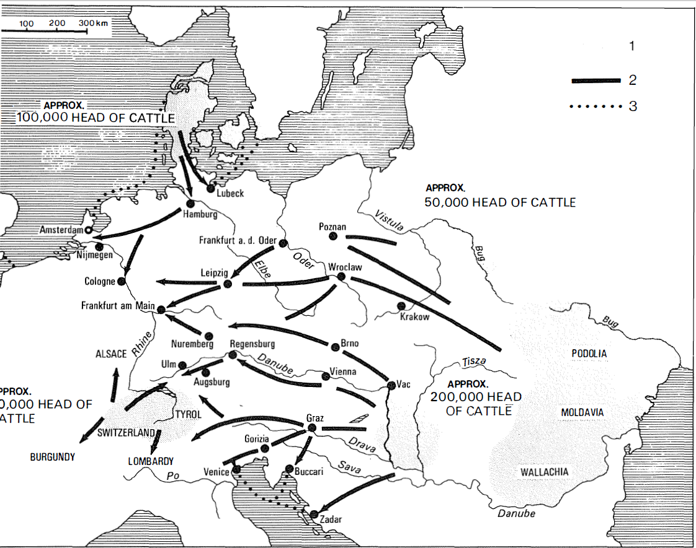
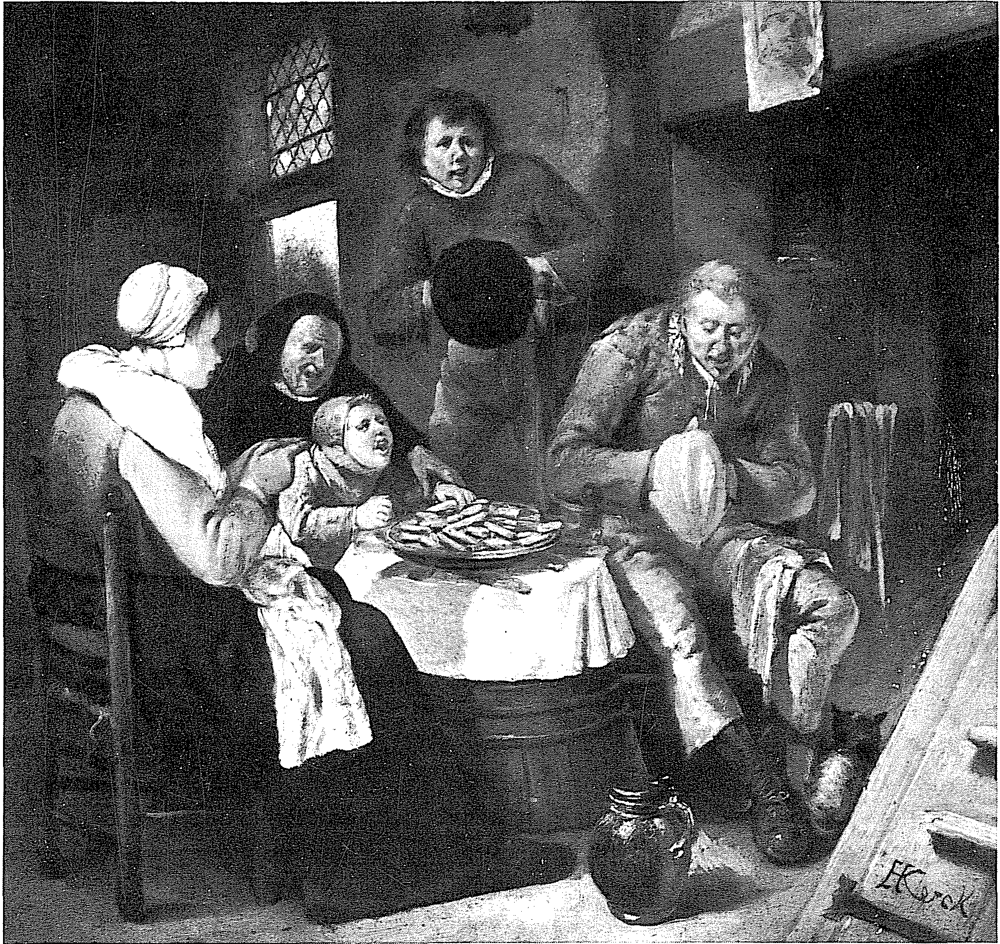

Sofra konusunda daha ilk bakışta iki taraf kolayca fark edilebilir niteliktedir: lüks ve sefalet, aşırı bolluk ve yokluk. Bunu söyledikten sonra, lükse doğru koşalım. Bu en kolay görülebilen seyir, envanteri en iyi çıkartılmış ve aynı zamanda bugünün koltukta oturan gözlemcisi için en çekici alandır. Diğer taraf ise, aslında çok doğal olan, Micheletvari bir romantizmden ne kadar kaçınsak da, çok acınacak bir durumdur.
Her şeyin beğeni sorunu olmasına rağmen, Avrupa'da gene de XV. veya XVI. yüzyıldan önce gerçek bir sofra lüksü ve eğer öyle söylemek istenirse, sofra incelmesinin ortaya çıkmadığını bildirelim. Batı bu noktada, Eski Dünya'nın diğer uygarlıklarına nazaran gecikmiştir.
Bugünün Batı'sının birçok lokantasını fethetmiş olan Çin mutfağı, çok eski bir gelenek olup, aşağı yukarı bin yıldan fazla bir süredir kurallar, ayinler, bilgince reçeteler, tat ustalarının ve onların birliklerinin sicillerine duyumsal ve edebi olan büyük bir dikkat, belki de Fransızların bunu paylaşan diğer tek halk (tamamen başka bir tarzda) oldukları yemek yeme sanatına karşı bir saygı bütünüdür. Yakınlarda çıkan güzel bir kitap, Çin diyetinin bilinmeyen zenginlikleri, çeşitleri, dengesi üzerinde durmakta ve buna dair birçok örnek vermektedir. Ancak ben bu ortaklaşa eserde, F. W. Mote'un coşkulu katkısının, K. C. Çang ve J. Spencer'inkilerle yumuşatılması gerektiğini düşünüyorum. Evet Çin mutfağı sağlıklı, lezzetli, çeşitli, icatçıdır; elinin ulaşabildiği her şeyi hayranlık verici bir şekilde kullanmayı bilmektedir ve dengeli kalmaktadır; taze sebzeler ve soya proteinleri etin kıtlığını telâfi etmektedirler, her türden konserve sanatını kaynaklarına eklemektedir. Fakat Fransa'da da taşra mutfak gelenekleriyle övünmek ve son dört veya beş yüzyıl için mutfak icatlarından, gustodan, bölgenin çeşitli kaynaklarını kullanmadaki dehadan söz etmek mümkündür: etler, kümes ve av hayvanları, tahıllar, şaraplar, peynirler, bostan ve meyva bahçesi ürünleri; tabii tereyağ, iç yağı, kazyağı, zeytinyağı ve cevizyağının farklı tatlarından söz etmeksizin, aile konserveciliğinin sınanmış yönlerinden söz etmeden. Fakat sorun başkadır: bu beslenme acaba insanların çoğunun beslenmesi miydi? Fransa'da kesinlikle hayır, köylü çoğu zaman kendi ihtiyacından “artan”dan fazlasını satmakta ve özellikle de ürünlerinin en iyi kısmını yememektedir: darı veya mısırla beslenmekte, buğdayını satmaktadır; haftada bir kere tuzlanmış domuz eti yemekte ve kümes hayvanlarını, yumurtalarını, oğlaklarını, danalarını, kuzularını pazara götürmektedir. Çin'de de olduğu gibi, bayram alemleri gündelik hayatın monotonluğunu ve yetersizliğini kesintiye uğratmaktadırlar. Ve bu arada, kesinlikle bir halk mutfak sanatını sürdürmektedirler. Fakat halkın ezici çoğunluğunu meydana getiren köylülerin gıdasının yemek kitaplarıyla hiçbir ilgisi yoktur; bu kitaplar ayrıcalıklıların kullanımı içindir. Ne de 1788'de Fransa'nın boğazına düşkünler için, gene boğazına düşkün biri tarafından düzenlenmiş kaynak listesiyle bir ilgileri vardır: Perigord'un hindi dolmaları, Toulouse'un kaz ciğeri ezmeleri, Nerac'ın güveçte kınalı keklikleri, Toulon'un taze ton ezmeleri, Perenas'nın semiz tarlakuşları, Troyes'nın pişmiş domuz kelleleri, Dombes'un çullukları, Caux ülkesinin horozları, Bayonne'un jambonları, Vierzon'un pişmiş dilleri ve hatta “Strasbourg'un lahana turşusu”... Çin'de de işlerin aynı olduğuna kuşku yoktur, çeşitlilik ve hatta sadece tokluk zenginler içindir. Halk deyişlerinden et ve şarabın zenginlikle eşdeğer olduğunu; bir fakirin yaşaması için gereken şeye sahip olmanın “çiğnenecek pirinci” olması demek olduğu çıkartılabilir. Ve Çang ile Spencer, John Barrow'un 1805'te mutfak konusunda zenginle fakir arasında var olan mesafenin, dünyanın hiçbir yerinde Çin'deki kadar büyük olmadığını ifade ederken yanılmadığını düşünmekte birleşmektedirler. Spencer buna destek olmak üzere, XVIII. yüzyılın ünlü bir romanı olan Kırmızı Pavyon Düşünden bir bölümü zikretmektedir: genç ve zengin kahraman, hizmetçilerinden birinin fakir evini ziyaret eder. Kadıncağız elinde ne varsa, içine en iyileri -pastalar, kuru meyvalar, cevizler- koyduğu tepsiyi sunarken, hüzünle farkına varır ki, "burada efendisinin yediğini sandığı şeylerden hiçbiri yoktur.”
Dünün dünyasında büyük mutfaktan söz ettiğimizde, demek ki her zaman lüksün tarafındayız. Tüm erginliğine ulaşmış uygarlıkların bildiği bir şey olan, bu aranılan mutfak, V. yüzyıldan itibaren Çin, XI.-XII. yüzyıllarda Müslüman mutfağı, ancak XV. yüzyıldan itibaren Batı'da, İtalya'nın zengin kentlerinde ortaya çıkmış, buralarda kuralları ve dekoruyla masraflı bir sanat haline dönüşmüştür. Venedik senatosu çok erkenden, genç soyluların masraflı şölenlerine itiraz etmiş ve 1460'ta, maliyeti adam başına yarım dükayı geçen ziyafetleri yasaklamıştır. Tabii ki banchetti devam etmiştir. Ve Mario Sanuda Günce’sinde, Karnavalın sevinçli günlerindeki bu prens yemeklerinin bazılarının yemek listeleri ile fiyatlarını kaydetmiştir. Bu ziyafetlerde, Signoria tarafından yasaklanmış çulluk, sülün, tavuskuşu gibi yemekler tesadüfen bir ayin konusuymuş gibi bulunmaktadırlar. Bir süre sonra, Ortensio Laudi, Venedik'te 1550-1559 aramda baskı üzerine baskı yapan Commentario della piu nota- bili mostruose cose d'Italia adlı kitabında, İtalyan kentlerinde boğazına düşkün insan damaklarına hoş gelebilecek şeyleri sıralamaktan başka hiçbir sıkıntıya girmemektedir: Bologna salam ve sucukları, Modena zampone’si (doldurulmuş domuz paçası), Ferrare etli böreği, Reggio cotogncıte’si (ayva ezmesi), Piacenza peyniri ve sarımsaklı gnocchi’si, Siena bademli kurabiyeleri, Floransa cad marzolini’si (Mart peynirleri), Monza luganica sottile’si (ince sosis) ve tomarelle’si (kıyma), Chiarenna sülünü ve kestaneleri, Venedik balık ve istiridyeleri, hatta Padova'nın eccelentissimo ekmeği (tek başına lüks) ve tabii ünü giderek artacak olan şarapları unutmaksızın.
Fakat daha bu dönemde bile, Fransa, Avrupa'nın dört bir yanından ona gelen değerli yemek tariflerinin toplandığı ve yenilerinin icat edildiği, en mükemmelinden bir iyi yemek ülkesi haline gelmiştir; bu ülkede oburluğun ve kibarlığın dindışı bayramlarının törenleri ve sunumu mükemmelleştirilmektedir. Fransa kaynaklarının bolluğu, çeşitlililiği, bir Venedikliyi bile şaşırtacak düzeydedir, 1557'de Paris'te elçi olan Girolamo Lippomano her yerde var olan bolluk karşısında coşkuya kapılmıştır: “size her fiyattan yemek sunan meyhaneciler var, bir teston’a, ikiye bir ecu’ye, dörde, ona, hatta eğer isterseniz adam başına yirmiye. Fakat yirmi beş icu karşılığında size çorba niyetine bol miktarda yiyecek veya kızarmış anka verilecektir: yani dünyada değerli olarak ne varsa.” Ancak asıl büyük Fransız mutfak sanatı, kendini ileride, Naiplik dönemi ile Naibin faal gustosu tarafından temsil edilen “gırtlak topçusunun silahsızlandırılmasından sonra kanıtlayabilecektir. Hatta daha sonra, 1746'da “haklı veya haksız yere Pascal'in Provinciales’inden, kesinlikle daha fazla basılan, Menon'un değerli kitabı Cuisiniere Bourgeoise’m (Burjuva Aşçı) nihayet yayınlanmasından sonra. Bu tarihten itibaren artık Fransa veya daha doğrusu Paris, mutfak modası’mn sahibi olma onuruna ulaşacaktır. Bir Parisli 1782'de “yarım yüzyıldan beri artık ince bir şekilde yemek yemek bilinmiyor" diye iddia etmektedir. Fakat bir başkası 1827'de “mutfak sanatı son otuz yıl içinde, bundan önceki bir yüzyıl içinde yapamadığı kadar bir ilerleme kaydetti” diye savunmaktadır. Bu Parislinin karşısında bazı büyük Paris “restaurant"larının muhteşem manzarasının bulunduğu doğrudur (bu kentteki “traiteur"lerin (aşçı), “restaurateur" (lokantacı) haline dönüşmelerinden beri çok geçmemiştir). Fiili durumda, tıpkı elbiseye olduğu gibi, mutfağa da moda hükmetmektedir. Ünlü soslar, bir gün aniden itibardan düşmekte ve bundan sonra ancak küçümseyici gülümsemelerle birlikte hatırlanabilmektedirler. Deyimler Sözlüğü (1768) yazarı olan belli etmeden alay eden bir kişi “yeni mutfak en fazlasından yiyeceklerin suyu ve ezmesidir” demektedir. Ve eskinin çorbalarına kulak asılmamaktadır. "Soupe (aynı sözlüğün dediğine göre), yani eskiden herkesin yediği ve bugün çok burjuva ve çok eski bir yemek sayılarak, kaynamış şeyin midenin liflerini gevşettiği bahanesiyle atılan çorba." “Çorbalık otlar” ve “yüzyılın ince lezzet duygusunun adeta avam bir yiyecek olarak dışarı attığı sebzelere de...” kulak asma. “Lahana ne daha az sağlıklı ne de daha az lezzetlidir” ve bütün köylüler onu hayatları boyunca yemektedirler.
Başka küçük değişiklikler de, adeta kendiliklerinden meydana gelmektedir. Örneğin XVI. yüzyılda Amerika'dan gelen hindi böyledir. Bu hayvan natürmontlarından birinde çizmekte ilk olanlardan biri de, herhalde Hollandalı ressam Joachim Buedkaum (1530-1573) olmalıdır -onun bu natürmortları bugün Amsterdam'ın Rijksmuseum'unda bulunmaktadır-. Söylendiğine göre, Fransa'da hindiler IV. Henri zamanında iç barışın yeniden kurulmasıyla artmışlardır. Büyük kralın tabağındaki tavuk hakkındaki bu yeni versiyona ilişkin olarak ne düşünülmesi gerektiğini bilmiyorum, ama XVIII. yüzyılın sonunda artık hiçbir kuşku yoktur: 1779'da bir Fransız “eskiden sofralarımızda en şerefli yere sahip olan kazı oradan uzaklaştıran hindi olmuştur" diye yazmaktadır. Rabelais döneminin yağlı kazlarını, Avrupa oburluğunun gerilerde kalan bir çağı mı olarak görmek gerekir?
Modayı, sürüp giden, ama birçok kereler anlam değiştiren şu kelimelerin açıklayıcı tarihi boyunca da izlemek mümkündür; giriş, ara yemek, yemek süsü vb. Ve et kızartmanın “iyi” ve “kötü” biçimlerini yorumlamak! Ama böylesine bir yolculuğun sonu olmayacaktır.
XV. yüzyılın öncesinde Avrupa’da incelmiş bir mutfak olmadığını söylüyorduk. Okuyucunun geriye yönelik olarak, örneğin Burgonya Valoislarının şatafatlı sarayındaki gibi, şu veya bu ziyafetten gözü kamaşmasın. Şu şarap çeşmelerinden, şu sahneye konulan oyunlardan, şu gökyüzünden halatlarla inen, melek kılığına girmiş çocuklardan... Gösterişe yönelik olan miktar, kaliteyi aşmaktadır. Daha doğrusu bir gırtlak lüksü söz konusudur. Etlerin çok miktarda olması -bu durum zengin sofralarında uzun zaman sürmüştür- bunun en belirgin veçhesidir.
Etler ister haşlanmış veya kızartılmış, sebzeler ve hatta balığa karıştırılmış olsun, bütün biçimleri itibariyle, Fransa'da mets adını alan muazzam tabakalarda “piramid” halinde yığılı olarak sunulmaktaydılar. “Böylece çok değişik olan soslarının ayrı sunulduğu, üst üste konulmuş kızartmalar tek bir mets meydana getirmekteydiler. Hatta bütün yemeği tek bir tepside toplamakta tereddüt edilmiyordu ve bu korkunç yamalı bohça tabağına da bir mets denilmekteydi." Daha o yıllar için bile Fransız mutfağı kitaplarına sahibip olduğumuz şu 1361 ve 1391 yıllarında, aynı şekilde asiettes denilmektedir: altı asiettes veya mets’lik bir yemek altı servis içermekteydi diyebiliriz. Bunların hepsi çok bol ve bizim için çoğu zaman beklenmedik ölçüdedirler. İşte Menagier de Paris’den alınma (1393) bir mets'nin -sonra bunlardan dört tane daha sunacaktır -içindekiler: sığır güveç, etli börek, bufa balığı, etli papara, beyaz balık sosu, artı bir arboulastre, yani tereyağ, kaymak, şeker ve meyva suyu içeren bir sos”. Bu büyük tabakların herbiri, bugünün aşçısının ciddiye almazsa akıllılık edeceği bir tarifle birlikte verilmekteydi. Bugünkü aşçıların bu tarifleri uygulama yönündeki tüm deneyleri kötü sonuçlanmıştır.
Bu et tüketimi, XV. ve XVI. yüzyıllarda çok zenginlere has bir ayrıcalığa benzemektedir. Montaigne, daha 1580'lerde, Yukarı Almanya hanlarında, hizmetkârlara aynı anda, en azından iki tabak et sunma ve bazı günlerde yedi tabağa kadar eklemeler yapma olanağını veren, birçok gözlü şu tabak taşıyıcıları kaydetmektedir. Kasaplık ve kepaplık etler bol miktardadır: sığır, koyun, domuz, tavuk, güvercin, oğlak, kuzu... Av hayvanlarına gelince, herhalde 1306 tarihli olan bir yemek kitabı, Fransa'ya ilişkin olarak bunların oldukça uzun bir dökümünü yapmaktadır; yaban domuzu XV. yüzyılda Sicilya'da o kadar harcı alemdir ki, kasaplık etlerden daha az etmektedir; Rabelais tüylü av hayvanlarını sayıp dökmeyi bitirememektedir: balıkçıl kuşu, tepeli balıkçıl, yabani kuğu, balaban kuşu, turna, keklik palazı, çil keklik, bıldırcın, tahtalı güvercin, kumru, sülün, karatavuk, çayırkuşu, flaman kuşu, sutavuğu, dalgıç- kuşu... Orleans pazarının uzun emtia listesine göre (1391-1560 arası) yaban domuzu, geyik, oğlak gibi büyük parçalar hariç, av hayvanları düzenli olarak boldur: boz tavşan, tavşan, balıkçıl, keklik, çulluk, tarlakuşu, yağmurkuşu, bağırtlak... XVI. yüzyıldaki Venedik pazarlarının tasviri de bu kadar zengindir. Ve insandan yana yarı yarıya boş olan Batı'da bu durum mantıklı değil midir? Gazette de France’da 9 Mayıs 1573'te Berlin kaynaklı şu haber okunmakta değil midir: “burada hayvanlar çok nadir olduğu için “kral kente, halkın tüketimi için haftada yüz geyik ve yirmi yaban domuzu getirtilmesini” emretmiştir?
Öyleyse, çoğu zaman edebi olan, zenginlerin “şarabını, peynirini, arpasını, sığırlarını, koyunlarını, danalarını çalıp, onlara yalnızca çavdar ekmeğini bıraktığı” fakir köylülerin yiyecekleri hakkındaki şikâyetleri fazla ciddiye almayalım. Bunun tersine dair kanıtlarımız var.
XV. yüzyılda Alçak Ülkeler'de “et o kadar gündelik kullanım’daydı ki, bir kıtlık bunalımı talebini çok az düşürüyordu.” Ve et tüketimi XVI. yüzyılın ilk yarısında ancak artmıştır (örneğin Lierre rahibeler yurdu revirinde olduğu gibi). Saksonya düklerinin 1482 tarihli bir emirnamelerine göre “herkes tarafından anlaşılmalıdır ki, zenaatkârlar öğlen ve akşam yemeklerinde toplam dört tabak yemek almalıdırlar, eğer etli bir günse: bir çorba, iki et, bir sebze; eğer bir cuma veya etsiz bir günse: bir çorba, bir taze veya tuzlu balık, iki sebze. Eğer oruç uzatılmak zorundaysa, beş tabak: bir çorba, iki cins balık, iki sebze garnitürü. Bunlara sabah ve akşam ekmek eklenmektedir. Gene bunlara kojent, hafif bira eklenmektedir." Zenaatkârlar, kentli yemek listesi denilecektir. Fakat 1429'da Alsace'daki Oberbuggheim'da eğer angaryaya koşulan köylü kâhyanın, maier’in çiftliğinde diğerleriyle birlikte yemek istemezse, maier ona “iki fenik karşılığı olarak, kendi evine iki parça sığır eti, iki parça kızarmış et, bir ölçü şarap ve ekmek göndermek” zorundadır. Bu konuda başka tanıklara da sahibiz. Yabancı bir gözlemcinin dediğine göre, 1557'de Paris'te “domuz fakirlerin, gerçekten yoksul olanların alışık oldukları yiyecektir. Fakat ne kadar cılız olursa olsun, her zenaatkâr, her tüccar, yağlı günlerde tıpkı zenginler gibi oğlak, keklik yemek istemektedir.” Tabii ki taraflı tanıklar olan bu zenginler, fakirlerin en küçük lüksünü bile eleştirmektedirler. Thoinot Arbeau (1558) “şimdilerde hiçbir vasıfsız işçi yok ki, düğününde obua ve sacquebute (dört kollu bir cins trompet) çalınmasını istemesin.”
KUZEY VE DOĞU AVRUPA'DA 1600'E DOĞRU BÜYÜKBAŞ TİCARETİ
1. Yetiştiricilik alanı 2. Karayolu 3. Denizyolu. Bakar'ın eski adı Buccari'dir. 1600'e doğru Orta ve Batı Avrupa mezbahalarına yönelik olarak kara ve denizyollarından yapılan büyükbaş ticareti etkileyicidir (400.000 baş). Fakat Paris pazarlarında (Bkz. II. c.), yılda yaklaşık 70.000 sığır satılmaktadır. Bu durum, bu uzun mesafe ticaretine, Avrupa et tüketiminin esasını sağlayan yerel ve bölgesel ticaretlerin de eklendiğinin kanıtıdır.
Et dolu masalar civar kırlardan veya dağlardan (İsviçre kantonları) yapılan düzenli bir iaşeyi gerektirmektedir; bundan da ötesi, Almanya'da ve Kuzey İtalya'da bu iaşe Doğu bölgelerinden, Polonya, Macaristan, daha XVI. yüzyılda bile batıya yarı yarıya yabani canlı hayvanlar sevk eden Balkan ülkelerinden yapılmaktadır. Weimar yakınlarındaki Buttstedt'te kurulan, Almanya'nın en büyük hayvan panayırında, hiç kimse aynı anda “16.000, hatta 20.000 başlık olağanüstü sürülerin yığılmasından” şaşkınlığa düşmemektedir. Venedik'e doğudan gelen sürüler karadan veya Dalmaçya'nın deniz durakları aracılığıyla ulaşmaktadırlar; bu hayvanlar aynı zamanda top atış talim alanı ve kuşkulu gemilerin karantina yeri de olarak iş gören Lido adasında dinlenmektedirler. Sakatat, özellikle de işkembe, San Marco'nun kentinin fakirlerinin gündelik gıdasıdır. 1498'de Marsilyalı kasaplar Auvergne'deki Saint-Flour'a kadar olan yerlerden koyun almaktaydılar. Bu uzak bölgelerden yalnızca hayvan değil, aynı zamanda kasap da ithal edilmektedir: XVIII. yüzyılda Venedik'teki kasaplar çoğu zaman Grisons dağlılarıdır; bunlar sakatat satış fiyatlarında hile yapmakta hızlıdırlar; Balkanlarda ise Arnavutlar, sonra da Epiruslular, günümüze kadar, kasap veya işkembeci olarak uzaklara göç etmişlerdir.
Herhalde 1350-1550 arasında Avrupa mutlu bir bireysel hayat dönemi görmüştür. Kara Veba'nın felâketlerinin ardından emek gücü kıtlaştığından, çalışan herkes için hayat şartları zorunlu olarak iyi hale gelmiştir. 1338'de Normandiya katedral meclisi üyeleri “yüzyılın başında altı hizmetkârın kazandığı kadar para isteyen” tarla işçisinden başka adam bulamamaktan yakınmaktadırlar. Üzerinde durulması gereken paradoks işte budur; yani basitleştirici ve çoğu zaman geçerli olan düşünceye göre, Orta Çağ içinde ne kadar geriye gidilirse, o kadar mutsuzluğun içine dalınmaktadır. Fiili durumda, eğer halkın yaşam düzeyinden, yani insanların çoğunluğundan söz edilecek olursa, tersinin geçerli olduğu görülecektir. Yanıltmayan ayrıntı: 1520- 1540 öncesinde henüz kalabalık olmayan Languedoc'ta, köylüler ve zenaatkârlar beyaz ekmek yemektedirler. Bozulma Orta Çağın “sonbaharı’ndan uzaklaşıldığı ölçüde vurgulu hale gelecek ve XIX. yüzyılın ortasına kadar bile sürecek; Doğu Avrupa'nın bazı bölgelerinde ve özellikle de Balkanlarda yuvarlanma devam ettiğinden, buralarda XX. yüzyılın göbeğine kadar varlığını sürdürecektir.

XVIII. yüzyılın ikinci yansında bir köylü evinde yemek, etsiz tek bir büyük tabaktan oluşmaktadır.
Batı'da XVI. yüzyıldan itibaren kısıtlamalar açığa çıkmaktadır. Heinrich Müller 1550'de Savabya'da “köylü evinde şimdi olduğundan başka türlü yenirdi; et ve yiyecekler boldu; kermeslerde ve ziyafetlerde tabaklar içindekilerin çokluğundan bükülürlerdi. Bugün her şey değişti. Gerçekte yıllardan beri ne felâketli bir dönem, ne pahalılık! Ve en varlıklı köylülerin yiyecekleri dünün rençberleri ve gündelikçilerinin- kilerden bile daha kötü”35 diye yazmaktadır. Tarihçiler bu tekrarlanan tanıklıkları kaale almadıklarından ötürü hatalıdırlar, çünkü buralarda insanların geçmiş dönemleri methetmeye yönelik marazi ihtiyaçlarını görmede inat etmişlerdir. Yaşlı bir Bröton köylüsü (1548) “ey arkadaşlar, köyden birinin diğer herkesi akşam yemeğine, tavuğunu, danasını, jambonunu, ilk kuzusunu kutlamak için yemeğe çağırdığının görülmediği hiçbir gün yoktu” diye açıklamaktadır. Normadiyalı bir soylu 1560'ta şöyle yazmaktaydı: babamın zamanında her gün et ardı, yiyecekler boldu, şarap su gibi içiliyordu.” Bir başka tanık. Din Savaşlarından önce “(Fransa'da) köylüler o kadar zengin ve her türlü malla doluydular ki, evleri çok iyi döşenmişti, kümes hayvanları ve diğer hayvanlarla doluydu ki, bu bir soyluluktu” diye anlatmaktadır. İşler çok değişmiştir. 1660'lere doğru. Yukarı Saksonya'daki Mansfeld bakır madeni işçileri, yevmiyeleriyle ekmek, bulgur ve sebzeyle yetinmek zorunda kalmışlardır. Ve çok fazla teşvik gören Runembergli dokuma kalfaları, 1601'de, kendilerine her gün verilmesi gereken eti, haftada üç kere almaktan yakınmaktadırlar. Ustalar da buna, altı hreutzer’lik yardımla onlara her gün et vermenin olanaksız olduğu şeklinde cevap vermektedirler.
Artık piyasalarda prim yapanlar tahıllardır. Fiyatları abartmalı hale geldiğinden, gereğinden fazla alımlar için para yetmemektedir. Et tüketimi uzun dönemde azalacaktır ve tekrarlayalım, bu 1850'ye kadar sürecektir. Garip bir gerileme! Kuşkusuz toparlanma ve istisna dönemleri olacaktır: örneğin Otuz Yıl Savaşlarının ertesinde Almanya'da, insanlarını kaybetmiş bir ülkede hayvanların çabucak çoğaldıkları bir ortamda; örneğin 1770-1780 arasında et fiyatı sürekli artıp, buğdayınki düşerken, Normandiya'nın önemli ekim alanları olan Auge ve Bessin'de hayvancılığın giderek tahıl tarımının yerine ikâme edildiği durumda, bu ikâme en azından 1785'teki büyük saman krizine kadar sürmüştür: oldukça mantıklı bir sonuç, çünkü o sıralar ağır sonuçları olan bir nüfus artışına av plan küçük köylülüğün önemli bir bölümünün işsizliğe, dilenciliğe, serseriliğe düşmesi söz konusudur. Fakat bu dönemler kısa sürmekte ve istisnalar kuralı teyid etmekten başka bir şey yapmamaktadırlar. Tahıl tarlası ve buğday deliliği ve tutkusu haklarını korumaktadırlar. Bas-Querey'de küçük bir kasaba olan Montpezat'da kasap sayısı kesintisiz azalmaktadır: 1550'de 18, 1556'da 10, 1641'de 6, 1660'da 2, 1763'te 1... Bu dönemde kasabanın nüfusu da azalıyorsa da, bu gerileme bire on sekiz değildir.
Paris'e ilişkin olarak düzenlenen rakamlar, 1751-1784 arasında yıllık 51-65 kg. arasında değişen adam başına bir kasaplık et tüketimini işaret etmektedirler, ama Paris Paris'tir. Ve Devrim'in başında bu kente yüksek bir tüketim olan 72,6 kg. atfeden Lavoisier, aynı ânda Fransa'nın ortalama tüketimini 48,5 libre (1 libre: 488 g.) yani 23,5 kg. olarak tahmin etmektedir. Tüm yorumcular bu rakamı iyimser bulmaktadırlar. Aynı şekilde, XVIII. yüzyılda Hamburg'da (ki bu kent et sağlayan Danimarka'nın kapısıdır) adam başına yıllık tüketim 60 kg.'a ulaşmaktadır (ama yalnızca 20 kg.'ı taze et), fakat XIX. yüzyılın başında Almanya'nın tümü için bu rakam, yılda adam başına 20 kg.'dan azdır (Orta Çağın sonundaki 100 kg.'ın yerine). Esas olgu, çeşitli kentler arasındaki (örneğin Paris, 1851'de bile aşikâr bir ayrıcalıktan yararlanmaktadır) ile, kentlerle kırlar arasındaki eşitsizlik olarak kalmaya devam etmektedir. 1821'de bir gözlemci dobra dobra “Fransa'nın onda dokuzunda yoksullar ve küçük çiftçiler haftada ancak bir kere et yiyebilmekte ve bu da tuzlu et olmaktadır” demektedir.
Modernlik yüzyıllarıyla birlikte, demek ki etobur Avrupa'nın ayrıcalığı zayıflamıştır ve gerçek çareler XIX. yüzyılın ortasında, yapay çayırların genelleşmesi, bilimsel bir hayvancılığın gelişmesi ve aynı zamanda Yeni Dünya'nın uzak hayvancılık kaynaklarının kullanımından önce ortaya çıkmayacaklardır. Avupa uzun zaman tam doymayacaktır... 1717'de Brie'de 18.800 hektar büyüklüğündeki Election de Melun topraklarında, bunların 14.400'ünün ekilebilir toprak olmasına karşılık, eğer öyle denilebilirse, 814'ü çayırdır: yani hiçbir şey. Ve üstelik “çiftçiler işletmelerinin ihtiyacı için gerekenin asgarisini korumakta” samanları Paris'te ve ucuza satmaktadırlar (başkentteki çok sayıdaki at için). İşlenen topraklarda buğdayın iyi hasatlarda, hektara 12-17 kental verdiği doğrudur. Bu rekabete ve bu çağrıya direnmek olanaksızdır.
Bu gerilemede, dereceler olduğunu söylemiştik. Bu gerileme Akdeniz ülkelerinde, zengin otlakları olan Kuzey bölgelerinden daha net olmuştur. Polonyalılar, Almanlar, Macarlar, İngilizler diğerlerinden daha az kısıntıya uğramışa benzemektedirler. Hatta İngiltere'de, bir tarım devriminin içinde, gerçek bir et devrimi yer alacaktır. Londra'nın büyük pazarı Leaden Hall'de (1778), bu sözün yakıştırıldığı bir İspanyol elçisinin söylediğine göre, bir “ayda, tüm İspanya’nın bir yılda tükettiğinden daha fazla et” satılmaktadır. Ancak “resmi” tayınların (kesin olmasalar bile) yüksek olduğu Hollanda gibi bir ülkede, yiyecek XVIII. yüzyıl sonunun düzelmelerinden önce çok dengesizdir: fasulye, biraz tuzlu et, ekmek (arpa veya çavdar), balık, biraz domuz yağı ve arada bir av eti. Fakat av eti, olağan olarak köylü veya senyör içindir. Kentlerin fakirleri onu hiç bilmemektedirler: “ona bayırturpu, kavrulmuş soğan, küflenmiş değilse bile kurumuş ekmek” veya yapışkan çavdar ekmeği ve “küçük bira (“çifte” olanı zenginler ve sarhoşlar içindir). Hollandalı burjuva da azla yetinerek yaşamaktadır. Hutsepot, ulusal yemek tabii ki ya koyun ya da sığır eti içermektedir, ama bu ince çekilmiş kıyma biçimindedir ve her zaman aşırı bir tutumlulukla kullanılmaktadır. Akşam yemeği çoğu zaman ekmek artıklarından yapılan ve biraz süt eklenen bir paparadır. Zaten tam da bu sırada hekimlerin arasında, etli bir yemeğin iyi mi, zararlı mı olduğu tartışması açılmıştır. Louis Lemery (1702) fazlasıyla bilgece “bana göre oldukça gereksiz gözüken bu tartışmalara girmeksizin, hayvan eti kullanımının, ılımlı olması koşuluyla, uygun olabileceğini söyleyebileceğimi sanıyorum” demektedir.
Et tayınındaki azalmayla eşzamanlı olarak, işlenmiş veya tuzlanmış et tüketiminde net bir artış meydana gelmiştir. Werner Sombart, hiç de haksız olmaksızın, XV. yüzyılın sonunda gemi mürettebatının beslenmesinde bir tuzlama devriminden söz etmiştir. Akdeniz'de de tuzlanmış balık ve bundan da fazlası, geleneksel peksimet, gemilerdeki mürettebatın her zamanki esas gıdasını meydana getirmektedirler. Tuzlanmış sığır etinin adeta tek alanı, muazzam Atlantik'le birlikte Cadiz'de başlamıştır; XVI. yüzyıldan itibaren İspanyol erzak eminliğinin sağladığı vaca salada. Tuzlanmış sığır eti daha çok kuzeyden, özellikle İrlanda'dan gelmektedir ve bu ülke aynı zamanda tuzlu tereyağ ihracatçısıdır Fakat devrede yalnızca erzak eminliği yoktur. Et bir lüks haline geldikçe, tuzlamalar fakirlerin olağan yiyeceği haline gelmiştir (bir süre sonra bunlara Amerika'nın zenci köleleri de katılacaktır). İngiltere'de yazdan sonra taze yiyecek olmadığından "saltbeej was the standart winter dish.” XVIII. yüzyılda Burgonya'da “köylülerin tükettiği etin en büyük bölümü domuzdan sağlanmaktadır. Tuzlama atelyesinde birkaç domuz parçasını zikretmeyen az sayıda envanter vardır. Taze et nekahat dönemindeki hastalara ayrılmış bir lükstür ve zaten o kadar pahalıdır ki, bu alanda bile her zaman kullanılmamaktadır.” İtalya ve Almanya'da seyyar sosis satıcıları (wursthandler) kent manzaralarının bir parçasını oluşturmaktadırlar. Tuzlanmış sığır eti, bundan da fazlası tuzlanmış domuz eti, Napoli'den Hamburg'a, Fransa'dan Saint Petersburg yakınlarına kadar Avrupa'nın fakirlerine zayıf et tayınlarını sağlamaktadır.
Kuşkusuz burada da istisnalar vardır. Başlıcası ve en büyüğü, P. J. Grosley'nin 1770'te yazdığı gibi İngilizler “yalnızca etle yaşamaktadırlar. Bir Fransızın bir günde yediği ekmek dört İngiliz’e yeter.” Bu örnek itibariyle Ada, Avrupa'nın yegâne “gelişmiş” ülkesidir. Fakat bu ayrıcalığı, nisbeten geri birçok bölgeyle paylaşmaktadır. 1658'de Mile, Montpensier, Dombes'daki köylülerinden bahsederken, bize bunların “iyi giyimli olduklarını, (hiçbir zaman) biçme vergisi ödemediklerini” söyledikten sonra, “et gününde dört kere yemek yemekledirler” diye eklemektedir. Bu doğrulanmayı beklemektedir, ama mümkündür, çünkü Dombes XVIII. yüzyılda hâlâ vahşi, sağlıksız bir bölgedir. Oysa insanların tam egemen olamadıkları bölgelerde, evcil veya değil, hayvanlar bol bulunmaktadır. Zaten biz XX. yüzyıl insanlarına Büyük Petro zamanında Riga'daki veya Tavernier zamanında Belgrad'daki (burada her şey “mükemmel”, iyi; ekmek, şarap, et ve Tuna ile Sava'da yakalanan kocaman turnabalıkları ve sazanlar “çok düşük” fiyatlaradır) olağan durum Berlin, Viyana, hatta Paris'tekinden daha tatmin edici gözükebilir. Birçok talihsiz ülke, insani açıdan zengin ülkelerden daha fakir değillerdir. Hayat düzeyi insan sayısıyla, onların emrindeki kaynakların kitlesi arasındaki bir orantı olarak kalmaya devam etmektedir.
Avrupa'nın ayrıcalığı azalmış olmakla birlikle, nene de bir ayrıcalık olarak kalmaktadır. Gerçekten de, diğer uygarlıkları düşünmek yeterlidir. Bir İspanyol (1609) “Japonya'da ancak avda yakaladıkları hayvanların etini yiyorlar” demektedir. Hindistan'da ne mutlu ki, halk etli yiyeceklerden dehşet duymaktadır. Moğol hanı Evrengzeb'in askerleri, bir Fransız hekimin dediğine göre, olağan olarak çok az talepçidirler: “ancak kişerisleri veya üzerine erimiş tereyağı döktükleri pirinç ve diğer sebzelerin karışımı olsun... işte memnundurlar”. “Bu karışım tam olarak, havanda birlikte dövülmüş ve pişirilmiş pirinç, baklagiller ve mercimekten yapılmaktadır”.
Çin'de et kıttır. Kasaplık et ya hiç ya da hemen hemen hiç yoktur: evde sofra artıklarıyla beslenen evcil domuz, bazen biraz pirinç verilen kümes hayvanları, av hayvanları, hatta özel kasaplar tarafından veya kapı önünde satılan “tüyü dökülmüş veya geri gelmiş” köpek, bu köpekler süt domuzları veya Peder de la Cortes'in dediği gibi, İspanya’daki oğlaklar gibi kafeslerde taşınmaktadırlar -az sayıda olan bütün bu hayvanlar, kararlı bir şekilde etobur olan bir halkın iştahını bastıramazlar. Haşlanmış koyun etinin kural olduğu Moğol halkları hariç, et hiçbir zaman ayrı bir yemek olarak verilmemektedir. Bir lokma büyüklüğünde kuşbaşı doğranmış, bazen kıyma haline getirilmiş olan et tsai’ın bileşimine, etleri veya balıkları sebzeler, soslar ve tatlandırıcılarla karıştırıp, geleneksel olarak pirince refakat eden sayılamayacak kadar çok küçük yemeğin bileşimine girmektedir. Ne kadar incelmiş ve hesaplı olursa olsun, bu mutfak fiilen Avrupalıları şaşırtmaktadır, çünkü onlara fakir olarak gözükmektedir. Peder de Las Cortes, zengin mandarinler bile “sanki iştahlarını açmak isterlermişçesine, birkaç lokma domuz veya tavuk veya başka bir eti didiklemektedirler... Zengin ve ulu olmalarına rağmen, tükettikleri et çok küçük miktardadır ve eğer eti biz Avrupalılar gibi yeselerdi, sahip oldukları tüm etler hiçbir şekilde yetmezdi... Çinlilerin verimi buna dayanmaktadır.” Bir Napolili, Çin'i Kanton'dan Pekin'e kat eden ve 1696'da geri dönen Gemelli Careri, hanlarda bulduğu ve ona göre kötü pişmiş olan bitkisel yiyecekler karşısında kudurmakta ve konaklamaları ile yürüyüşlerinin rastlantısı içinde ya tavuk ya yumurta, sülün, tavşan, jambon, keklik satın almaktadır. Avrupalı bir gözlemci 1735'e doğru şöyle bir sonuca varmıştır: “Çinliler çok az iri et yemektedirler” ve şunu eklemiştir “demek ki hayvan beslemek için onlara daha az toprak gerekmektedir.” Pekinli bir misyoner, bundan kırk yıl kadar sonra daha büyük bir kesinlikle şöyle açıklamaktadır: “Avrupa'nın çağdaş filozoflarının sakıncaları ve sonuçlarından kuşku duymadıkları nüfus fazlası” Çinlileri “sığırların ve koyun sürülerinin yardımından vazgeçmek” zorunda bırakmaktadır, “çünkü onlara yiyecek sağlayacak toprak insanlara gereklidir.” Bunun sonucunda “topraklar için gübre, sofralar için et, savaş için at” eksikliği ortaya çıkmakta ve “başka yerlerdekiyle aynı miktarda tahıl elde etmek için daha fazla emek sarf edilmekte ve daha fazla adam çalışmaktadır.” Şöyle sonuca varmaktadır: bütün “orantılar korunduğunda, Çin'deki bir öküze karşılık, Fransa'da en azından on tane vardır.”
Çin edebiyatı aynı yönde tanıklık etmektedir. Çing hanedanı zamanındaki şu gururlu ve nutukçu büyükbaba “geçen gün damadım geldi ve bana işte tabakta duran şu iki libre kurutulmuş geyik etini getirdi” diye sır vermektedir. Bir kasap “imparatorun şahsından daha fazla paraya sahip olan” ve evinde en azından onlarca akraba ve hizmetkâr bulunan yüksek bir kişiye karşı büyük bir hayranlık duyacaktır. Tartışılmaz kanıt: bu iki kişi ondan “yılda 4.000-5.000 libre et almaktadır, hatta tören olmadığında bile!” Böylesine bir tören ziyafetinin yemek listesinde topu topu “kırlangıç yuvaları, ördek, kalamar, acı Kuang hıyarları...” bulunmaktadır. Ve kaprisli genç bir dul kadının yiyecek talepleri neler olmaz ki? Her gün sekiz fen ilaç, bir gün ördek, ertesi gün balık, bir başka gün taze sebze, bambu filizi haşlaması veya portakal, bisküvi, nilüfer, kızarmış serçe, tuzlu ıstakoz ve tabii şarap, “yüz çiçek şarabı.” Bütün bunlar tersine, bir incelmeyi ve hatta aşırı ve masraflı bir incelmeyi dışlamaktadırlar. Fakat eğer Çin mutfağının lüksü Avrupalılar tarafından bu kadar yanlış anlaşıldıysa, bunun nedeni etin onlar için lüksün eşanlamlısı olmasıdır. Ve hiç kimse bize, Pekin'de imparatorluk sarayının karşısındaki ve kentin bazı meydanlarındaki et yığılmasını tasvir etmemiştir. Üstelik bunlar Tataristan'dan gelen ve kış soğuğunun iki veya üç ay koruyacağı “o kadar ucuza ki, bir oğlak veya bir yaban domuzunu sekizlik sikkeye veriyorlar” dedikleri av etleri yığınlarıdır.
Türkiye'de de aynı küçük miktarlar, aynı azla yetinme söz konusudur. Kurutulmuş et, pastırma burada yalnızca askerlerin sefer yiyeceği olarak kalmamaktadır. XV.-XVIII. yüzyıllar arasında İstanbul'da, sarayın muazzam koyun eti tüketimi bir yana bırakılacak olursa, kent ortalaması, yılda adam başına 1,33 koyun olarak çıkmaktadır ve İstanbul, İstanbul'dur, yan ayrıcalıklı bir kenttir. İlk bakışta bolluk içinde bir ambar olan Mısır'da, 1693'te bir seyyahın söylediğine göre, “Türklerin yaşama biçimi sürekli bir hücre hayatıdır. En zenginlerininki bile dahil, yemekleri kötü ekmek, sarımsak, soğan ve ekşi peynirden oluşmaktadır; buna haşlanmış koyun eti eklediklerinde, bu onlar için müthiş bir yemek olmaktadır. Bu ülkede ucuz olmasına rağmen, hiçbir tavuk veya başka bir kümes hayvanı yememektedirler.”
Avrupalıların ayrıcalığı kendi kıtalarında azalma yolundaysa da, bunların içinden bazıları için ya Doğu Avrupa'ya -örneğin Macaristan'da olduğu gibi-, ya sömürge Amerika'sında Meksika'ya, Brezilya'ya (vahşi vayvan sürülerinin istila ettiği ve beyazlarla melezlerin yararına güçlü bir et uygarlığının kurulduğu Sao Francisco vadisinde), veya bundan da fazlası güneyde, tek bir yemek için süvarilerin yabani bir hayvan öldürdükleri Buenos Aires veya Montevideo civarına yönelen gerçek ve yeni bir Orta Çağın bolluğu başlamaktadır. Bu katliamlar Arjantin'deki inanılmaz miktardaki serbest sürü hayvanlarının hakkından gelemeyecek, ama Kuzey Şili'deki bu gıda kaynağını çok erkenden kurutacaktır; XVI. yüzyılın sonundan sonra Coquimbo civarında yalnızca yeniden vahşileşen köpekler yaşayacaktır.
Güneşte kurutulmuş et (Brezilya'nın carne do sol’ü), kıyı kentleri ve plantasyonlardaki zenci köleler için hemen bir kaynak haline gelmektedir. Kemikleri ayıklanmış ve kurutulmuş bir et olan carque, Arjantin saladeros’undan hazırlanmakta (gene kölelere ve fakirlerin Avrupa'sına yönelik olarak) ve uygulamada bir XIX. yüzyıl başı icadı olmaktadır. İşte keyfine düşkün bir seyyah, Manila'dan Acapulco'ya dönerken bindiği kalyonda, yedi veya sekiz aylık bitmez tükenmez dönüş yolculuğunun sonunda, adil bir ceza olarak, “et günlerinde” bal gibi “güneşte kurutulmuş inek ve manda dilimleri yemeğe” mahkûm olmuştur... "bunlar o kadar serttir ki, uzun zaman kendilerinden farklı olmayan bir tahta ile düğmeden onları çiğnemek, ne de güçlü bir miğde fesadına uğramadan hazmetmek mümkündür.” Ek bir iğrenme konusu olarak, bu korkunç yiyeceklerin içinde kurt kaynamaktadır. Tabii ki et ihtiyacı hiç yasa tanımaz. Örneğin Antiller Denizi korsanları, bir miktar iğrenmekle birlikte, Afrika zencileri gibi, tercihan gençleri olmak üzere, maymunları öldürmekte ve yemektedirler ve Roma'da sefiller ve fakir Yahudiler, özel kasaplarda satılan ve halkın dehşet duyduğu manda etini satın almaktadırlar; aynı şekilde, Aixen-Provence'ta, “uzun zamandan beri sağlıksız olma ününe sahip olan” şu "koca et” “öküz” kesilmeye ve yenilmeye ancak 1690'a doğru başlamıştır. Bu arada Danimarka'da “at eti pazarda satılmaktadır” diye aktarmaktadır, biraz iğrenen bir Fransız seyyah.
Avrupa'daki büyük sofra lüksü XV. ve XVI. yüzyılların ötesinde, en fazlasından birkaç ayrıcalıklıyı ilgilendirmekteydi. Bir çılgınlık olgusu olan bu lüks, aşırı bollukta tüketilen nadir yemeklere dayanmaktaydı. Daha sonra hizmetçiler bunlardan yemekte ve artıklar bozulmuş olsalar bile, perakendecilere satılmaktaydılar. Çılgınlıklar: Paris'e Londra'dan bir kaplumbağa getirtmek, “bu bin ecu’ye mal olan bir yemektir (1782) ve yedi veya sekiz obur onu miğdeye indirmektedir.” Buna kıyasen terbiyeli yaban domuzu yemeği çok sıradan gözükmektedir. Aynı tanık bize “evet onu kendi gözlerimle ızgaranın üzerinde gördüm; Saint-Laurent'dan geleni o kadar iyi bir boyda değildi. Onu nar gibi bir kor ateşinin içine koyuyorlar, kaz ciğeriyle yağlıyorlar, ince yağlarla alevlendiriyorlar, en lezzetli şaraplarla yıkıyorlar, kafası da olduğu halde bütün olarak sunuyorlar” demektedir. Konuklar sonra hayvanın çeşitli yerlerinin tadına şöyle bir bakmaktadırlar. Burada söz konusu olan hükümdarların şaklabanlıklarıdır. Kral veya tuzu kuruda olanların evleri için, mübayaacılar küfelerini, pazarda olanların en iyisiyle doldurmaktadır: et, av eti, balık. “Küçük balık”lara ise kötü parçalar düşmektedir ve bunların fiyatları zenginlerin aldıklarından daha yüksektir, daha da kötüsü bu mallar olağan olarak hilelidirler. “Devrim arefesinde Paris kasapları sığırın en iyi parçalarını zengin evlerine vermekle, halka ise en kötü parçalarını satmakta ve bunların içine alaylı bir şekilde, sevinçler adı verilen kemikleri katmaktadırlar. Fakirlerin yedikleri en kötü parçalar, “döküntüler”, kırpıntı veya çöpler kasapların dışında satılmaktadır.”
Nadir yemeklere dair başka örnekler: fındıktavukları veya yelvekuşları: Conti prensesinin düğününde (1680) bunlardan 16.000 livre’lik yenilmiştir. Bu bağ kuşu Kıbns'ta bol bulunmaktadır (Ada XVI. yüzyılda bunları sirkeye basılmış olarak Venedik'e ihraç ediyordu), İtalya, Provence ve Languedoc'ta da bulunmaktadır. Veya yeşil istiridyeler, Dieppe veya Cancale'in taze istiridyeleri veya Paris bölgesinde seralarda yetiştirilen çilekler veya ananaslar. Gene zenginler için olmak üzere, bilgince, hatta düşünülebilecek tüm tatlandırıcıları -karabiber, baharat, badem, amber, misk, gülsuyu...- karıştırarak elde edilen çok bilgince soslar. Ve Paris'te, hepsinin en iyileri olan ve altın fiyatına işe giden Languedoclu değerli aşçıları unutmayalım. Fakir bu bayramlara katılmak isterse, hizmetçilerle anlaşmak veya Versailles “artık yeri”ne gitmek durumundadır; burada kral sofrasının artıkları satılmakta ve kentin dörtte biri, sıkılmadan bunlarla beslenmektedir: “biri buraya belinde kılıç olduğu halde girmekte, bir kalkanbalığı, ince ve nadir bir parça olan bir sombalıgı kafası satın almaktadır.” Belki de Quartier Latin'de Huchette caddesindeki aşçılardan birine gitmesi veyahut da Valee rıhtımında (kümes ve av hayvanları rıhtımı) kendine, diğerleriyle beraber içinde kaynadığı, büyük bir ocak çengeline asılı “daimi tencere”nin içinden balık gibi avlanan bol tuzlu bir horoz sunması daha akıllıca olacaktır. Bunu ya evinde henüz sıcakken veya “dört adım ötede, bir Burgonya şarabıyla sulayarak” yiyebilir. Ama bunlar burjuva tarzlarıdır.
Lüks aynı zamanda masa, tabak takımı, gümüşler, örtü, peçeteler, mumışığı, yemek odasının çerçevesidir de. XVI. yüzyıl Paris'inde güzel evleri kiralamak veya bundan da iyisi, bekçilerin suç ortaklığını satın aldıktan sonra, ahçıdan getirtilen yemeklerle, burada konuk ağırlamak adeti vardı. Geçici konuk bazen buraya öylesine bir kazık kakmaktaydı ki, gerçek ev sahibi taşınmak zorunda kalıyordu. Bir elçi (1557) “Papanın elçisi Mgr. Salviati benim zamanımda iki ayda üç kere taşınmak zorunda kaldı” demektedir.
Muhteşem evler olduğu gibi, muhteşem hanlar da vardır. Montaigne (1580), Châlons'da (sur-Marne) “güzel bir binası olan ve gümüş takımlarla servis yapılan La Couronne’da kaldık” diye kaydetmektedir.
Fakat sorunu kendi içinde ortaya koyalım: “yüksek konumda olan ve ihtişamlı bir şekilde ağırlanmak istenen otuz kişilik bir topluluk için” olduğu gibi, bir sofra nasıl kurulmalıdır? Cevap, beklenmedik bir adı olan, 1654'te yayımlanan Nicolas de Bonnefours'un Kır Lezzetleri adlı kitabında verilmiştir. Cevap: bir kenara on dört takım, ötekine on dört takım yerleştirilmeli ve masa dikdörtgen biçiminde olduğu için “yukarı başa” bir kişi artı “alt başa bir veya iki kişi” oturtulacaktır. Konuklar “birbirlerinden bir iskemle mesafesi kadar uzaklıkta” olacaklardır. “Örtünün her taraftan yere kadar uzanması” gerekmektedir. “Birçok çatallı tuzluk ve ortada elden ele geçen tabakların konulacağı tabak taşıyıcısı” olmalıdır. Yemek sekiz servisten oluşacaktır, sekizincisi ve sonuncusu, örneğin “kuru ve sıvı” reçellerden, tabaklarda “boyama resimlerden”, misk şekerlerinden, Verdun drajelerinden, “miskli ve amberli” şekerden meydana gelecektir. Metrdotel, kılıcı belinde olduğu halde, “en azından her serviste” tabakların ve “iki serviste bir peçetelerin” değiştirilmesi emrini verecektir. Fakat her serviste masanın üzerindeki büyük tabakların yerlerinin nasıl kaydırılacağını bile belirleyen bu özenli tasvir, her konuğun yemek takımlarının nasıl konulacağını ihmal etmektedir. Bu dönemde bir sofra takımı, herhalde bir tabak, bir kaşık ve bir bıçaktan meydana gelmekteydi ve herhalde herkesin bireysel bir çatalı olmuyordu ve önünde kesinlikle hiçbir cam bardak ve şişe bulunmuyordu. Adabı muaşeret kuralları belirsiz kalmaktaydı, çünkü yazar kibarlık olarak konuklara “insanların birbirlerinden iğrenmelerine yol açabileceği için, tabaktan kaşık kaşık almak yerine”, bir kerede içsinler diye, çorba için çukur bir tabak tavsiye etmektedir.
Bizim alışık olduğumuz tarzda bir sofra düzenlemesi, sofrada davranış kuralları, uygulamanın yavaş yavaş, teker teker ve belgelere göre çok farklı biçimlerde dayattığı birçok ayrıntı biçiminde ortaya çıkmışlardır. Kaşık ve bıçak oldukça eski adetlerdir. Fakat kaşık kullanımı ancak XVI. yüzyılda genelleşmiş, onunla birlikte bıçak sunma adeti de yayılmıştır: daha önceleri, konuklar kendi bıçaklarını getirmekteydiler. Aynı şekilde, herkese, kendi önünde durmak üzere bir cam bardak verme adeti de bu sıralarda ortaya çıkmıştır. Eski nezaket kuralları, bardağın boşaltıldıktan sonra yandakine geçirilmesini ve onun da aynı şeyi yapmasını gerektirmekteydi. Veya söylendiğinde, uşak yan odadan veya yan masadan, istenilen içkiyi -şarap veya su- getirmekteydi. Montaigne 1580'de, yolculuk yaptığı Güney Almanya'da “herkesin kendi gümüş kupası veya çanağı var, bunu kullanan kişi bu kupayı, boşalır boşalmaz doldurmaya dikkat ediyor ve kalay veya tahtadan olan, uzaktaki geniş ağızlı çanaktan, bunun içine şarap dökerken, kadehin yerini hiç değiştirmiyor” diye açıklamaktadır. Personelin zahmetini tasarruf eden kibar bir çözüm, ama bu oyunda her konuk kendi önünde kişisel bir kadehe sahip olmak zorundadır. Gene Almanya'da, Montaigne'in çağında, her konuğun kalay veya tahta bir tabağı olmakta, bazen altta tahta bir çanak, üstte de kalay bir tabağı bulunmaktaydı. Kanıtımızın olduğu üzere tahta tabaklar, Alman kırlarında ve herhalde diğer yerlerde, XIX. yüzyıla kadar varlıklarını sürdüreceklerdir.
Fakat er veya geç ortaya çıkan bu incelmiş iyileştirmelerden önce, bir tahta tabağa veya üzerine etini koyduğu bir dilim ekmekle uzun süre yetinmişlerdir. O sıralar büyük servis tabağı her şeye ve herkese yetiyordu: herkes buradan beğendiği parçayı eliyle almaktaydı. Montaigne “Souisses” (İsviçreliler) hakkında şunları kaydetmektedir: “ne kadar kişi varsa o sayıda sapı gümüş tahta kaşık kullanıyorlar (yani herkese bir kaşık) ve hiçbir İsviçreli her şeyi aldığı bıçağı olmadan dolaşmaz ve yemeğe elini hiç sokmaz.” Mutlaka gümüşten olmayan madeni saplı kaşıklara ve çeşitli bıçaklara dair örnekler müzelerde korunmaktadır. Fakat burada söz konusu olanlar eski araçlardır.
Bireysel çatal kabaca XVI. yüzyılda ortaya çıkmıştır ve Venedik ile, genel olarak İtalya'dan itibaren, ama yavaş bir biçimde yayılmıştır. Alman bir vaiz bu şeytani lüksü mahkûm etmektedir: Allah bu aleti kullanmamızı isteseydi parmak verir miydi? Montaigne çatalı bilmemektedir, çünkü kendini çok hızlı yemek yemekle suçlamaktadır, o kadar hızlı yemektedir ki “bazen aceleden parmaklarımı ısırıyorum” demektedir. Zaten “kaşık ve çatalın yardımına az başvurduğu”nu kabul etmektedir. Ve 1609'da Villamont senyörü Türk mutfağını ve Türklerin beslenme alışkanlıklarını ayrıntılı bir şekilde tasvir ederken “Lombardlar ve Venediklilerin yaptıklarının tersine, asla çatal kullanmamaktadırlar” diye eklemektedir -ama Fransızlar gibi demektedir ve bu nedensiz değildir-. Aynı dönemde, bir İngiliz seyyahı olan Thomas Coryade çatalı İtalya'da keşfetmiş, onunla eğlenmiş, sonra da onu firciferus, yani çatal taşıyıcı veya daha doğrusu çiftlik çatalı taşıyıcısı olarak vaftiz eden arkadaşlarının alay konusu olmasına rağmen, onu benimsemiştir. Acaba zengin ziyafet konuklarını çatal kullanmaya zorlayan çilek mi olmuştur? Bundan kuşku duyalım. Örneğin İngiltere'de, envanterlerde 1660'tan önce çatal yoktur. Çatal kullanımı ancak 1750'lere doğru genelleşecektir. Avusturyalı Anne tüm hayatı boyunca, ellerini et dolu tabaklara daldırma adetini sürdürmüştür. Viyana sarayı da, en azından 1651'e kadar aynı şeyi yapmıştır. Fakat acaba XVI. Louis'nin sarayında kim çatal kullanmaktadır? Saint- Simon'un “kuşku duyulacak bir temizlikte” dediği Montausier dükü. Ama gene aynı Saint-Simon'un bir tavuk yahnisini eliyle doğru dürüst yiyor diye methettiği kral, çatal kullanmamaktadır! Burgonya düküyle erkek kardeşleri, kralın akşam sofrasına kabul edildiklerinde ve kendilerine kullanılmasının öğretilmiş olan çatalları tutunca, kral bunlardan yararlanmalarını yasaklamıştır. Bu olay, kendi hesabına “her zaman bıçağını ve parmaklarını kullanmış” olduğunu açıklayan Palatine tarafından memnuniyetle anlatılmaktadır. Bunun sonucunda, XVII. yüzyılda konuklara sunulan bir peçete bolluğu vardır, oysa peçetenin de kullanımı, bizzat kendinin söylediğine göre, ancak Montaigne'in zamanında yayılmaya başlamıştır. Gene çatal kullanımının azlığının sonucu olarak, bir yemek esnasında birçok kereler tekrarlamak üzere, bir ibrik ve bir tasla “el yıkama” adeti yaygındır.
Yeni bir yaşama bilgisini temsil eden bu dönüşümler, kendilerini yavaş yavaş dayatmışlardır. Yemeklere tahsis edilmiş bir salonun lüksü bile, Fransa'da ancak XVI. yüzyılda ve zenginler arasında yaygın hale gelebilmiştir. Daha önceleri senyör, yemeğini geniş mutfağında yemekteydi.
Yemeklerin törensel yanı hizmetkârları gerektirmekte, mutfakta ve konukların etrafında bunların sayısını artırmaktadır ve hu durum yalnızca, yemek veya o zaman denildiği gibi “kralın eti” için le Grand ve le Petit Commun’ün koşuşturduğu Versailes'da meydana gelmemektedir. Bütün bu yeni lüks Fransa veya İngiltere'nin tamamına, ancak XVIII. yüzyılla birlikte ulaşabilmiştir. Duclos 1765'e doğru şöyle yazmaktadır: “eğer bundan altmış yıl önce ölenler geri dönseler, sofra, kıyafet ve adetlere ilişkin olarak Paris'i tanıyamazlar.” Kuşkusuz bu sözler, her yerde hazır ve nazır bir lükse av olmuş Avrupa'nın tamamı ve kendi adetlerini her zaman yerleştirme peşinde olduğu kolonileri için de geçerlidir. Bu arada. Batılı seyyahlar geniş dünyanın adetlerini kötü görecekler ve onlara tepeden bakacaklardır. Gemelli Careri adeta bir senyör olan, ona ev sahipliği edip, sofrasında ağırlayan (1694) bir İranlInın tavırlarından şaşkınlık duymaktadır. Bu İranlı “konuklarının tabaklarına pilav koymak için kaşık değil de, sağ elini kullanmakta”dır. Veya Labat'nın (1728) Senegal'deki Araplar hakkında söylediklerini okuyalım: “onlarda masa üzerinde yemek yemenin ne olduğu bilinmiyordu.” Bu talepçi yargıçların karşısında yalnızca, sofralarına sırlanmış taslarıyla oturan ve elbiselerinin kemerinde bıçak ve çubuklarını (bir kılıf içinde) taşıyan ve bunları yemek için kullanan incelmiş Çinliler temize çıkarabilmektedirler. 1760'lara doğru. Baron de Tott “baş tercümanın karısı”nın kır evinde verdiği daveti mizahi bir şekilde tasvir etmektedir. Padişahın hizmetinde olan bu zengin Rumlar, yerel adetlerin çoğunu benimsemişlerdir, ama onlardan farklılaşmaya özen göstermektedirler: “yuvarlak bir masa, etrafında iskemleler, kaşıklar ve çatallar, bunları kullanma alışkanlığından başka hiçbir şey eksik değildi. Ancak bizim adetlerimizden hiçbirini ihmal etmek istemiyorlardı; bu adetler tıpkı bizim İngilizlerinkine karşı yaptığımız gibi, Rumların nezdinde çok büyük bir itibar kazanmışlardı ve yemek esnasında bir kadının zeytini eliyle aldığını ve alafranga yemek üzere çatalına sapladığını gördüm.”
Ancak Alsace Landgraflığı için çıkartılan ve arşidükün sofrasına davet edilen genç subayların uymak zorunda oldukları kuralları belirleyen bir talimatname, 1624 gibi bir tarihte şöyle belirtmektedir: “temiz kıyafet giymek, yarı sarhoş gelmemek, her lokmadan sonra içmemek, içmeden önce bıyıkları ve ağzı iyice silmek, parmakları asla yalamamak, tabağına asla tükürmemek, ne de masa örtüsüne burun silmek, kupayı hayvan gibi devirmemek...” Bu talimatlar okuyucunun, Richelieu Avrupa'sındaki adetlerin incelmesi konusunda hayal kurmasına yol açacaktır.
Bu geçmişe doğru yolculukta, hiçbir şey bu gecikmiş incelmelerden öncesine ait tablolar kadar öğretici değildir. Oysa eski yemek sahneleriyle, bu tablolar sayılamayacak kadar çoktur. Ve özellikle İsa'nın sonuncu akşam yemeği tablosu, Batı'da ressamlar olduğundan beri binlerce örnekle temsil edilen Cana (İsa'nın sonuncu akşam yemeği tablosu); veya İsa'nın Simon'un evinde yemek yemesi, veya Cana'nın düğünü, veyahut da Emmaus hacılarının sofrası... Eğer yalnızca sofrayı, işlemeli örtüleri, oturulacak şeyleri (arkalıksız iskemleler, iskemleler, sıralar) ve bu özellikle de tabakları, servis tabaklarını, bıçakları görmek üzere, bir an için bu patetik kişilerden kurtulunacak olursa, 1600'ler öncesine kadar hiçbir çatalın, hemen hemen hiçbir bıçağın bu tablolarda ortaya çıkmadığı; tabak olarak ekmek dilimlerinin, yuvarlak veya oval tahta tabakların, şöylesine bir çukurlaştırılmış kalay tabakların -ki Güney Almanya'da yapılan tablolarda bunların üzerindeki mavi lekeler esas kural olarak ortaya çıkmaktadır- kullanıldığı fark edilecektir.
Tabak işi gören ekmek dilimi, çoğu zaman bir tahta veya madeni tabakanın üstüne konulmuştur; yararı: kesilmiş parçanın suyunu emmesidir. Sonra bu “ekmek- tabak” fakirlere dağıtılmaktaydı. Her zaman bir bıçak bulunmaktaydı ve eğer bu bıçak tek başınaysa ve eğer tüm konuklar onu kullanacaklarsa büyük boyda olmaktaydı, ama çoğu zaman konukların her birine küçük bıçaklar verilmekteydi. Tabii ki şarap, ekmek, kuzu mistik randevuda yer almaktadırlar. Tabii ki bol ve lüks dolu bir yemek söz konusu değildir, anlatım dünya nimetlerini aşmakta ve bunların üzerinde hiç durmamaktadır. Ancak İsa ve havarileri Ulm veya Augsburg burjuvaları gibi yemektedirler, çünkü Cana düğününü, Herodes'in ziyafetini veya ailesi ve dikkatli hizmetkârlarıyla çevrelenmiş şu Bâleli ustanın yemeğini veya 1593'te yeni bir eve taşınmasının şerefine verdiği ziyafette dostlarıyla birlikte şu Nurembergli hakimi resmetmek söz konusu olduğunda, manzara hep aynıdır. Benim bildiğim kadarıyla, bir Cana’da gözüken ilk çatallardan biri, Jacoppo Bessno tarafından resmedilmiş olmalıdır (1599).
Fakat gündeliğe geçmek üzere, lüks sahifesini çevirelim. Tuz bizim için, iyi bir hizaya gelme çağrısı olacaktır, çünkü bu çok sıradan mal, evrensel ve zorunlu bir ticaretin alanına girmektedir; tuz insanlar, hayvanlar, et ve balık tuzlaması için zorunlu bir maldır ve bu nedenle de o kadar önemlidir ki, hükümetler işe karışmaktadırlar. Tuz, Çin'de olduğu kadar Avrupa'da da, devletler ve tüccarlar için büyük bir zenginleşme kaynağıdır; bu konuya döneceğiz. Vazgeçilmez olan tuz bütün engelleri zorlamakta, bütün refah unsurlarını kârlı hale getirmektedir. Böylece ağır çeken bir madde olarak, nehir yollarını kullanmakta (çıkarken Rhone) ve Atlantik teknelerinin hizmetinden yararlanmaktadır. Hiçbir kaya tuzu madeni yoktur ki, işletilmesin. Aynı şekilde, deniz tuzları Akdeniz'de veya Atlantik'te güneş ülkeleriyle sınırlanmıştır ve bunların hepsi de katolik ülkelerdir ve Kuzeyli protestan balıkçıların Brouage, Setubal veya San Lucar de Barrameda tuzuna ihtiyaçları vardır. Öte yandan, tuz mübadelesi savaşlara rağmen hep yapılmakta ve büyük tüccar konsorsiyumları bu işten büyük kârlar sağlamaktadırlar. Aynı şekilde, Sahra tuzu, çöle rağmen, deve kervanları aracılığıyla Kara Afrika'ya ulaşmakta ve burada sahiden altın tozuyla, fildişiyle veya zenci kölelerle mübadele edilmektedir. Hiçbir şey, böylesine bir ticaretin önlenemez taleplerini bundan daha iyi belirtmez.
Bize aynı şeyi, küçük İsviçre kantonu Valais de, ekonomi ve katedilecek mesafe terimleri içinde söyleyecektir. Yukarı Rhone vadisinin kenarında yer alan bu ülkelerde, kaynaklar ile nüfus arasında, demir ve tuz için hariç olmak üzere, mükemmel bir denge vardır. Halkın özellikle hayvancılık, peynir ve tuzlamaları için talep ettiği tuz hariç. Oysa tuz onlara, bu uzak Alp kantonuna Peccais'den (Languedoc), 870 km. uzaklıktan, Lyon üzerinden; 1300 km. uzaklıktaki Barletta'dan, Venedik üzerinden; 2300 km. uzaklıktaki Trapani'den, gene Venedik üzerinden gelmektedir.
İkame edilmesi mümkün olmayan esas madde tuz, kutsal bir gıdadır (“Bugünkü Malgaş dilinde olduğu gibi, eski İbranice'de de tuz kutsal gıdanın eşanlamlısıdır”). Yavan tahıl lapalarını yiyen Avrupa'da, tuz büyük bir tüketime konu olmaktadır (günde adam başına 20 g., bugünkünün iki katı). Hatta bir tıp tarihçisi, XVI. yüzyılda Batı Fransa'da köylülerin tuz vergisine karşı ayaklanmalarının, mâliyenin yol açtığı bir tuz açlığından kaynaklanmış olabileceğini düşünmektedir. Zaten şu veya bu ayrıntı bize, tuzun hemen akla gelmeyecek birçok kullanım alanını öğretmekte veya yeniden öğretmektedir: örneğin Provence butarkası yapımında veya XVIII. yüzyılda yaygınlaşan ev konserveciliğinde -kuşkonmaz, taze bezelye, mantar, keçimantarı, kuzumantarı, enginar...-.
Peynir, yumurta, süt, tereyağ alanında da lüks yoktur. Paris'e peynirler Brie, Normandiya (Bray ülkesinin angeiot’ları, livarot’ları, pont-l’eveque'leri), Auvergne, Touraine, Pikardiya'dan gelmekte ve yakın tekkeler ile kırlarda temas halinde olup, her şeyi perakende satan regrattier'lerde satılmaktadır: Montreuil ve Vincenne peynirleri buraya “taze tutmuş ve sorgun dalından veya hasırdan sepete yeni basılmış olarak gelmektedir”, bunlara jonchies, lor peyniri denilmektedir. Akdeniz'de Sardinya peynirleri cacio cavallo veya salso, Napoli'ye olduğu gibi Roma'ya, Marsilya'ya veya Barselona'ya, her yere gitmektedirler; bu peynirler Cagliari'den, bir geminin tüm yükünü oluşturmak üzere teknelerle ihraç edilmekte ve XVIII. yüzyılın sonunda Avrupa ve tüm dünya pazarlarını istila edecek olan Hollanda peynirlerinden daha ucuza satılmaktadırlar. Daha 1572'den itibaren binlerce Hollanda peyniri, kaçak olarak İspanyol Amerika'sına ulaşmaktaydı. Venedik'te Dalmaçya peynirleri ve koskocaman Kan- diye peynir tekerlekleri satılmaktadır. 1543'te Marsilya'da, diğerleri arasında Auvergne peynirleri de tüketilmektedir. Bunlar bu eyalette o kadar boldurlar ki, XVI. yüzyılda burada beslenmenin temelini meydana getirmektedirler. Bir önceki yüzyılda Dauphine'deki Grande-Chartreuse peyniri mükemmel satılmaktaydı ve fondüler ile kızarmış ekmek üzerinde pişirmek için kullanılıyordu. “Gerçek gruyire” peniri olan İsviçre gravyeri, Fransa'da daha XVIII. yüzyıldan önce büyük bir tüketime konu olmuştur. 1750'lere doğru Fransa bu peynirden, yılda 30.000 kental ithal etmekteydi. “Franche-Comte, .Lorraine, Savua ve Dauphine...’de taklitleri yapılmaktaydı” ve bu taklitler özgün peynirin ün ve fiyatına sahip olmamakla birlikte, geniş ölçekte yayılmışlardı. Buna karşılık parmesan’m, örneğin Normandiya'daki taklit deneyleri başarısızlıkla sonuçlanmışlardı.
Peynir, yani ucuz protein Arupa'nın büyük halk gıdalarından biridir ve her Avrupalı ondan elde etme olanağı bulamadığında, büyük bir üzüntü duymaktadır. 1698'e doğru Fransa'da bazı köylüler, İtalya ve Almanya'da savaşan ordulara peynir taşıma işinden servetler edinmişlerdir. Ancak özellikle Fransa'da peynir mutfaktaki ününe, “soyluluğu”na, ancak yavaş yavaş ulaşabilmiştir. Yemek kitapları ona küçük bir yer ayırmakta, ne niteliklerini ne de özel adlandırma biçimlerini işaret etmektedirler. Keçi peyniri küçümsenmekte, koyun ve inek peynirinden aşağı görülmektedir. Daha 1702'de bile, br hekim olan Lemery'nin gözünde yalnızca üç peynir vardır: “Roquefort, Parmezan ve Dauphine'deki Sassenage'dan gelenler..., bunlar en incelmiş sofralarda sunulmaktadırlar. Roquefort o sıralar, yılda 6.000 kentalden fazla satılmaktadır. Sassenage peyniri inek, keçi ve koyun sütlerinin karışımının kaynatılmasından elde edilmektedir. Parmesan (daha sonra moda olan, Floransa'nın marsolina peyniri gibi) VIII. Charles'ın dönüşünden itibaren, İtalya savaşlarının bir kazancı olarak ortaya çıkmıştır. Ancak Lemery onun hakkında ne söylerse söylesin,
1718'de Londra'da elçi olan kardinal Dubois, yeğenine mektup yazdığında, ona Paris'ten ne göndermesini istemiştir? Üç düzine Pont-1'Eveque peyniri, bir o kadar marolle ve brie -artı bir de peruka-. Peynir mahsullerinin, daha o sıralarda bile sadık taraftarları ve amatörleri vardır.
Bu mütevazi ama diyetetik olarak zengin gıdaların, Hind'e kadar olan İslam alemindeki büyük yerini işaret edelim: süt, tereyağ, peynir. 1694'te bir seyyah, evet İranlılar hiç para harcamamakta “biraz peynir, içine tatsız tuzsuz ince bir mısır ekmeği batırdıkları ekşimiş sütle yetinmekte, sabah bunun içine, bazen sade suda pişirdikleri pilav katmaktadırlar” diye kaydetmektedir. Çoğu zaman bir pirinç lapası olan pilav, zengin sofralarına ait olmaktadır. Bu hiç kuşkusuz, süt mamüllerinin fakirlerin hemen yegâne gıdası olduğu Türkiye için geçerlidir: yoğurt, yanında kaymağı ve tulum yahut tekerlek peynirleri, veya İstanbul'a, hatta İtalya'ya gönderilen Ulah dağlarının peyniri olan ünlü kaşkaval gibi top peynirleri unutmamak gerekir; bu kaşkaval, Sardinya ve İtalya'nın cacio cavaüo’su gibi, defalarca kaynatılmış koyun peyniridir.
Ama Doğu tarafında, Çin'in geniş ve inatçı istisnasını unutmayalım: bu ülke sütü, peyniri, terayağı sistematik olarak görmezden gelmekte, inek, keçi burada yalnızca etleri için yetiştirilmektedir. Öyleyse M. de Guignes'in orada yediğini sandığı “tereyağ” nedir? Bu yağ, Çin'de ancak bazı nadir pasta çeşitlerinde kullanılmaktadır. Japonya bu konuda Çin iğrenmesini paylaşmaktadır: inek ve öküzün toprak işlemede kullanıldığı köylerde bile, Japon köylüsü bugün hâlâ, ona “pis” gözüken süt ürünlerini tüketmemekte, ona gerekli olan düşük miktardaki yağı soyadan elde etmektedir.
Buna karşılık süt Batı kentlerinde o kadar büyük miktarlarda tüketilmektedir ki, ortaya iaşe sorunları çıkartmaktadır. Londra'da her kış süt tüketimi artmaktadır, çünkü bu mevsimde tüm zengin aileler kentte kalmaktadırlar, yazın da ters nedenden ötürü azalmaktadır, ama kışın olduğu gibi, yazın da devasa hilelere konu olmaktadır. Süt perakendeciler tarafından, hatta üretim aşamasında, geniş ölçüde sulandırmaktadır. Söylendiğine göre “Surreyli büyük bir toprak sahibinin (1801) (mandırasında) ünlü kara ineğin adıyla bilinen bir tulumbası vardır, çünkü aynı renge boyanmıştır ve bütün ineklerin toplamı kadar süt verdiği konusunda teminat verilmektedir. Valladolid'de bir yüzyıl önce, civar kırlardan süt getiren ve kenti çökelek peyniri, tereyağ ve bir Portekizli seyyahın kalitesi ile ucuzluğunu övdüğü kaymaktan yana işae eden 400'den fazla eşeğin doldurduğu sokakların gündelik manzarasını tercih edelim. III. Felipe bir düşler kenti olan bu başkenti, gene de Madrid için terk edecektir, çünkü orada her şey boldur: tavuk pazarında her gün 7.000'den fazla parça satılmakta, koyun dünyanın en iyisi, ekmek mükemmel, şarap harika ve süt ürünleri iaşesi, bunların özellikle kıt olduğu İspanya ölçeğinde bir lüks olmaktadır.
Kuzey Afrika'nın İskenderiye ve ötesine kadar olan ham tereyağ bölgesi hariç, tereyağ Avrupa’nın kuzeyine has olarak kalmaktadır. Dar kıtanın geri kalan kısmı iç yağı, domuz yağı, zeytinyağı alanıdır. Fransa mutfağın bu temelinin paylaşılmış coğrafyasını tek başına özetlemektedir. Loire ülkesinde gerçek bir tereyağ nehri akmaktadır; Paris'te ve ötesinde tereyağ kullanımı bir kural haline gelmektedir: Louis Lemery (1702) “Fransa'da onun girmediği hemen hiçbir sos yapılmıyor” demektedir. “Hollandalılar ve Kuzey halkları onu bizden daha çok kullanmaktadırlar ve tenlerinin tazeliğine bunun katkıda bulunduğu iddia edilmektedir.” Aslında tereyağ kullanımı, Hollanda'da bile gerçekten, ancak XVIII. yüzyılda yaygınlaşacaktır. Zenginlerin mutfağının belirleyicisi olmaktadır. Bu yabancı ülkelerde yaşamak veya oralardan geçmek zorunda kalan Akdenizliler, tereyağın cüzzamlı sayısını artırma özelliği olduğunu düşündüklerinden, ondan kaçınmaktadırlar. Öylesine ki, 1516'da Alçak Ülkeler'de yolculuk yapan zengin Aragon kardinali, aşçısını yanında götürmüş ve eşyalarının arasına yeterli kadar zeytinyağ koymuştur."
Rahatlığı içine iyice yerleşmiş olan XVIII. yüzyıl Paris'i, geniş bir taze, tuzlu (İrlanda ve Brötanya'dan), hatta Lorraine modasına göre eritilmiş tereyağ iaşesine sahiptir. Taze tereyağın büyücek bir bölümü ona, tüccarlann ham yağı topladıktan sonra, süt suyunu yok etmek için yeniden katılaştırdıkları Dieppe yakınlarındaki küçük Gournay kentinden gelmektedir. “Bu işi yaptıktan sonra yağı, kırk ile altmış lib- relik topraklar haline getirmekte ve Paris'e göndermektedirler.” Züppelik hiçbir yerde yok olmadığından, Dictionnaire Sentencieloc’ye (2768) göre “ekâbirin zikretmeye cesaret edebildiği yalnızca iki cins tereyağ vardır: Vuvre (Vanves) tereyağı ve Frevalais tereyağı”, bunlar Paris civarındadır.
Yumurta yaygın bir tüketime konu olmaktadır. Tabipler Salerno okulunun eski tavsiyesini tekrarlamaktadırlar, onları fazla pişirmemek, taze yemek gerekir: “si sumas ovum molle sit atque novum." Ve yumurtaların tazeliğini koruyan reçeteleri ortalıkta dolaşmaktadır. Yumurtanın pazar fiyatı her halükârda önemlidir; halk malı olarak, konjonktür dalgalanmalarını sadakatle izlemektedir. Floransa'da satılan birkaç yumurtadan hareketle, bir istatistikçi XI. yüzyılda bu kentteki hayat pahalılığı düzeyini oluşturmaktadır. Gerçekten de, yumurta fiyatı tek başına hayat düzeyi veyahut şu kent veya bu ülkedeki paranın değeri hakkında geçerli bir sınama kaynağı oluşturmamaktadır. Mısır'da XVII. yüzyılda “bir sol karşılığında 30 yumurta, iki güvercin veya semiz bir piliçten birinin seçildiği" bir an olmuştur; Manisa-Bursa yolu üzerinde (1694) “yiyecekler pahalı değildir: bir paraya (bir sol) yedi yumurta, on paraya bir tavuk, iki paraya iyi bir kavun ve aynı paraya, bir günde ne kadar yiyebilirseniz o kadar ekmek alınmaktadır”, aynı yolcunun kaydettiğine göre Şubat 1697'de, Yeni İspanya’da Acapulco yakınlarında “hancı benden bir tavuk için bir sekizlik sikke (32 sol) ve yumurta başına bir sol aldı” Böylece yumurta Avrupalıların olağan beslenmeleri içinde yer almaktadır. Bu nedenle Montaigne Alman hanlarında şaşırmıştır: buralarda “salataya koydukları dilimlenmiş katı yumurtadan başkasını” sunmamaktadırlar. Veya Napoli'den ayrılıp, Roma'ya giden Montesquieu de şaşırmıştır: “bu eski Latium'da yolcu ne bir piliç ne bir güvercin ne de çoğu zaman bir yumurta bulabilmekte.”
Fakat bunlar Avrupa'daki istisnalardır, vejetaryen Uzak Doğu'da olduğu gibi kural oluşturmamaktadır; bu bölgede Çin, Japonya ve Hind bu zengin ve sıradan gıda katkısına hiç sahip değillerdir. Yumurta buralarda çok kıttır ve halk yiyecekleri arasında yer almamaktadır. Ünlü Çi salamura ördek yumurtaları zengin oburlar içindir.
Zaten muazzam olan, denizin gıda değeri, bundan da fazla olabilirdi. Gerçekten de, geniş bölgeler aslında elin yettiği yerde olan bu gıdaları bilmemekte veya hemen hemen bilmemektedirler.
Anliller'deki balık avlama sahaları veya Vera Cruz'a giden gemilerin deniz sakinken muzice gibi avlar yaptıkları, balık dolu balık sahalarına rağmen, veya Terre- Neuve sahil ve balık alanlarının hemen yalnızca veya her halükârda öncelikli olarak Avrupa'nın beslenmesine yarayan (Morina dolu fıçıların XVIII. yüzyılda İngiliz kolonilerine ve Güney Amerika plantasyonlarına ulaşmalarına rağmen) masalsı zenginliğine rağmen; veya Kanada ve Alaska nehirlerini yukarı doğru çıkan sombalıklarına rağmen; veya güneyden gelen soğuk suların faal bir balina avcılığı ile, daha XVIII. yüzyılda bile burada Basklı zıpkıncıların bulunmasının nedeni olan küçük Bahia Akdeniz'inin kaynaklarına rağmen, Yeni Dünya'nın durumu aşağı yukarı böyledir. Asya'da yalnızca Japonya'da ve Güney Çin'in Yang-çe-Kiang nehri ağzı ile Haynan adası arasında kalan bölümünde balıkçılık yapılmaktadır. Diğer yerlerde ise, örneğin Malezya'da veya Seylan çevresinde olduğu gibi, yalnızca birkaç kayık söz konusuymuş gibi gözükmektedir. Veya İran Körfezinde Benderabbas yakınlarındaki (1694) “(güneşte kurutulmuş) ve gündelik ekmekleri olan sardalyaları, tüccarlar tarafından satın alınan incilerden daha çok seven, çünkü balıkları avlamanın daha kolay ve emin olduğunu” düşünen106 balıkçılar gibi, bir merak unsurudur.
Tuzlu suda balık yakalamanın ve havuz balıkçılığının büyük oran oluşturmadığı Çin'de (Yang-çe-Kiang ve Pei Ho'da Tonkin'de de olduğu gibi, mersin balığı yakalanmaktadır), balık kendiliğinden mayalanma usulüyle muhafaza edilmektedir; fakat tüketim bugün bile önemsizdir (yılda adam başına 0.6 kg.); deniz bu karasal kitleye nüfuz edememektedir. Yalnızca Japonya geniş ölçekte balıkoburdur. Ayrıcalığını korumuştur ve bugün (yılda adam başına 80 kg.; Peru'nun arkasından dünyanın ikinci en büyük balık avı filosu) etobur Avrupa'nın simetriği olmaktadır. Japonya'nın balık bolluğu iç denizin zenginliklerinden, bundan da fazlası Yeso ve Sahalin'de, Oya Şivo'nun muazzam soğuk su kitleleriyle Kuro Şivo'nun sıcak sularının karşılaşma yerinde, tıpkı Kuzey Atlantik'te Terre-Neuve'de Gulf Stream ile Labrador akıntısının karşılaşma noktasında olduğu gibi, elinin uzanacağı yerde balık havzalarına sahip olmasından kaynaklanmaktadır. Sıcak ve soğuk suların planktonlarının birleşmesi balık kaynamasına neden olmaktadır.
Bu ölçüde olmamakla birlikte, Avrupa'nın da kısa ve uzun mesafelerden iaşe kaynakları bulunmaktadır. Avrupa'da dinsel kayıtların oruç günlerini (yılda 166 gün, bunlardan büyük perhiz XIV. Louis'nin saltanatına kadar aşırı bir titizlikle uygulanmıştır) artırması yüzünden, balık daha da önemli hale gelmektedir. Büyük perhizin bu kırk günü esnasında, et, yumurta veya kümes hayvanları yalnızca hastalara satılabilmekte ve bunun için de hem tabibin hem de rahibin imzasını taşıyan bir belge istenmekteydi. Denetimi kolaylaştırmak için, Paris'te yalnızca “Büyük Perhiz kasabı”, yasaklanmış yiyecekleri satmaya izinliydi ve bu işi Hotel Dieu'nün duvarlarının içinde yapıyordu. Bunun sonucunda, muazzam bir taze isli veya tuzlu balık ihtiyacı ortaya çıkmaktaydı.
Ancak balık, Avrupa kıyıları çevresinde her zaman bol bulunmamaktadır. O kadar methedilen Akdeniz, birkaç istisna dışında, ancak sınırlı kaynaklara sahiptir; Boğaz'ın ton balığı: Hıristiyan aleminin Habeşistan'a varıncaya kadar olan bölgelerinde tercihli oruç yiyeceği olan Rus nehirlerinin havyarı, ezelden beri tanrının lütfu olan Yunan takımadalarının kalamar ve ahtapotları, Provence'ın sardalya ve ançüezleri. Ton balığı Kuzey Afrika, Sicilya, Provence, Endülüs, Portekiz Algarve'si dalyanlarında da yakalanmaktadır: Lagos, Akdeniz veya Kuzey yönünde büyük bir tuzlanmış ton sevkiyat merkezidir, bazen bir geminin tüm yükünü tuzlu ton fıçıları oluşturmaktadır.
Kuzeyin şu dar Akdenizleri olan Manş, Kuzey Denizi, Baltık ve bunlardan da fazlası, Okyanus kıyısının aşırı bol kaynaklarından söz etmek gerekmektedir. Orta Çağda Okyanusun Avrupa kıyılarında faal bir balıkçılık söz konusudur (sombalığı, uskumru, morina). Baltık ve Kuzey Denizi XI. yüzyıldan itibaren büyük ringa av sahalarına sahiptirler, buraları Hansa birliğinin, sonra da Hollandalı ve Zelandalı balıkçıların talihini sağlamışlardır. William Beukelszoon adlı bir Hollandalı 1350'lere doğru, ringayı çabuk temizlemenin, kayığın içinde tuzlamanın yolunu bulmuş olmalıdır, böylece balıkçılar balığı hemen varillere "tıkmaktadırlar.” Fakat ringa XIV. ile XV. yüzyıllar arasında Baltığı terk etmiştir. Bu tarihten sonra Hollanda ve Zelanda kayıkları, Dogger Bank'ın suyla şöylesine bir örtülü kumsallarında, İngiliz ve İskoç sahillerinin açıklarında, Orcade adalarına kadar olan alanda balığa çıkacaklardır. Başka tekneler de bu ayrılıklı yerlere gitmiştir ve XVI. yüzyılda Valoislar ile Habsburglar arasındaki mücadelenin ortasında, kuralına uygun bir şekilde kararlaştırılan ve azçok uygulanan ringa ateşkesleri, Avrupa'ya bu nimetten mahrum kalmama olanağını sağlamıştır.
Ringa Avrupa'nın batısına ve güneyine deniz yoluyla, nehirler boyunca, arabalarla veya yük hayvanlarıyla gönderilmektedir. Bouffis (şişirilmiş), saurets (isli) veya blancs (beyaz) ringalar Venediğe kadar ulaşmaktadır: beyaz, yani tuzlu, saurs veya saurets, yani islenmiş, bouffis, yani şişirilmiş veya biraz islenmiş, biraz tuzlanmış... Taze balıkların çoğu zamanın büyük kentlerine, örneğin Paris'e aceleyle götürülmektedirler, zavallı sefiller önlerinde balık ve istiridye yüklü bitik bir atı itmektedirler. Müzisyen Janequin'in Paris Çığlıklarında hâlâ “gecenin taze ringalarımı duyuyoruz. Genç ve tutumlu Samuel Peppys'in Londra'da karısı ve dostlarıyla birlikte kendine bir fıçı istiridye sunması, küçük bir lükstür.
Fakat deniz balığının Avrupa'nın açlığını bastırmaya yettiğini sanmayalım. Deniz kıyısından uzaklaşılıp, Merkez ve Doğu'da kıtanın içlerine girildikçe, tatlı su balığına başvurma zorunluğu kendini giderek daha fazla dayatacaktır. Paris'teki Seine bile dahil, beratlı balıkçıları olmayan hiçbir nehir yoktur. Uzaktaki Volga devasa bir haznedir. Loire sombalıkları ve sazanlarıyla ünlüdür. Portekizli bir seyyah, XVII. yüzyılın ilk yılları esnasında Valladolid'deki balık iaşesini, daha çok açık veren ve taşımaların uzunluğundan ötürü, iyi kalitede olmayan bir şekilde bulmuştur. Bütün yıl boyunca dilbalığı, sardalya, istiridye, bazen de mezgit bulunmaktadır; ve Büyük Perhiz esnasında Santander'den mükemmel mercanlar gelmektedir. Fakat seyyahımız, Burgos'tan ve Medina de Rioseco'dan gelen ve o zaman İspanya'nın başkenti olan şehrin, bazen yarısını doyuracak kadar çok olan ve pazarlarda her gün satılan şahane alabalıkların inanılmaz miktarı karşısında şaşkına dönmektedir. Bohemya'daki yapay göllerdeki ve Güneyin zengin malikânelerindeki havuz balıkçılığını daha önce zikretmiştim. Almanya'da sazan yaygın bir tüketime konu olmaktadır.
XV. yüzyılın sonundan itibaren, Terre-Neuve balık yataklarındaki balık işletmeciliği büyük bir devrim olmuştur. Bu avcılık Basklar, Fransızlar, Hollandalılar, İngilizler arasında bir itişmeye yol açmış, daha güçlüler, daha az korunanları buralardan sürmüşlerdir. İspanyol Baskları böylece elenmişler, balık alanlarına girme, güçlü donanmaları olan İngiltere, Hollanda ve Fransa'ya kalmıştır.
Büyük sorun: balığı korumak, taşımak. Morina Terre-Neuve teknelerinde temizlenmekte ve tuzlanmakta veya karada kurutulmaktaydı. Tuzlu morina, “henüz tuzlanmış olan ve hâlâ çok nemli olan” yeşil morina’ydı. Yeşil morina konusunda uzmanlaşmış tekneler, on veya on iki tane kadar balıkçısı ve bunlara ek olarak, balığı temizleyen, tuzlayan ve ambarlara, bazen güverteye varana kadar dolduran denizcileri olan küçük tonajlı gemilerdir. Bunların adeti, Terre-Neuve balık yataklarına ulaştıktan sonra, kendilerini akıntıya bırakmaktır. Bunun tersine, oldukça büyük tekneler kuru veya pişirilmeye hazır morina taşımaktadırlar. Bunlar Terre-Neuve kıyısına varınca demir atmakta, balığı kayıklar avlamaktadır. Balık, Savary'nin uzun uzadıya tasvir ettiği karmaşık yöntemlerle, karada kurutulmaktadır.
Her büyük gemi yola çıkmadan önce, “ikmal yapmak”, tuz, erzak, şarap, alkol, olta, olta iğnesi yüklemek zorundadır. XVII. yüzyılın başlarında bile, Norveçli ve Danimarkalı balıkçılar tuz edinmek için, Sevilla yakınlarındaki San Lucar de Barrameda'ya gitmekteydiler. Tabii tüccarlar bunu onlara veresiye veriyorlardı; borçlu ödemeyi, Amerika'dan dönüşünde balıkla yapmaktaydı.
Bu, La Rochelle'de, XVI. ve XVII. yüzyıllardaki refah yüzyıllarında da olan şeydir. Her ilkbaharda çok sayıda yelkenli bu limana, çoğu zaman birkaç yüz tona ulaşan miktarlarda balık boşaltmaktadır, çünkü oldukça geniş ambarlara sahiptirler: “Morina, yüklenmediği zaman başa daha büyük belâ olmaktadır." Teknede 20-25 adam bulunmaktadır, bu da zor işte emek gücünün önemini işaret etmektedir. Noterde imzalanan anlaşmaya göre, “büyük ikmalci” gemi patronuna un, alet, içki, tuzu veresiye vermektedir. La Rochelle'in yakınındaki küçük Olonne limanı, tek başına yüz kadar yelkenli donatmakta ve her yıl, Okyanusun öteki kıyısına doğru binlerce adam atmaktadır. Kentin nüfusu 3.000 olduğu için, gemi sahiplerinin tayfalarını, İspanya'ya kadar uzanan bir alandan devşirmeleri gerekmektedir. Tekneler yola çıktıktan sonra, burjuvaların “toptan” veya “macera olarak” avans verilmiş olan paraları, balık avının ve deniz yolculuklarının rastlantısı içinde dolaşmaktadırlar. Geri ödeme ancak dönülünce, Haziran'dan itibaren olacaktır. Zaten ilk geri dönen teknelere muazzam bir prim ayrılmıştır. Galip gelen gemi sahibi handa, tartışmaların, kavgaların, el sıkışmaların ortasında, burjuvaların istilasına uğramaktadır. Özellikle bol para ödeten bir zafer. Herkes yeni balığı beklemektedir: “Taze balıklar şahane değil mi?” Galibin, morinanın küçük yüz’ünü (adete göre 110-100 arası) 60 livre’e sattığı olacaktır, oysa birkaç gün sonra bin tanesi ancak 30 livre’e satılabilecektir. Olağan olarak yarışı Olonne teknelerinden biri kazanmaktadır, çünkü bunlar yılda iki kere yolculuk yapmaya alışmışlardır: yani iki “mevsim”; “prim” mevsimi ve “geç” mevsim. Ama bunun kötü havadan ötürü, balık yatağını ıskalama tehlikesi de vardır.
Bitmez tükenmez balık avı: Terre-Neuve'ün muazzam ve suya çok az batmış denizaltı yaylasının meydana getirdiği büyük balık yatağında, morinaların genel buluşmaları geçekleşmektedir. “Eğer öyle denilebilirse, bayramlarını burada kutlamaktadırlar ve miktarları o kadar fazla olmaktadır ki, orada toplanan her ulustan balıkçılar, burada sabahtan akşama kadar yalnızca olta atmak, çekmek, yakalanan morinaların içini çıkartmak ye bu iç organlarını oltaya takarak bir başkasını yakalamaktan başka bir şeyle meşgul olmamaktadırlar. Tek bir kişi bazen günde 300-400 morina yakalayabilmektedir. Balıklar, onları burada tutan yiyecekler tükendiğinde, çok iştah açıcı olan mezgitlere saldırmaktadırlar. Bunlar da morinalardan kaçmakta, bu da bizim (Avrupa) kıyılarımızdaki avlarımızı borçlu olduğumuz, mezgitlerin geri dönüşüne yol açmaktadır.”
Bir Marsilyalı 1739'da “bize Terre-Neuve'de morinayı tanrı veriyor" diye haykırmaktadır. Ve onun kadar hayranlıkla dolu bir Fransız seyyah, bir yüzyıl sonra “Avrupa'nın en iyi ticareti, morina avlamaya gitmektir, çünkü bu morinayı yakalamak için hiçbir şey çıkmamakta (bundan para çıkmadığını anlayınız, bu hem doğru hem yanlıştır), yalnızca avın zahmetine ve borca katlanılmaktadır; bu avdan büyük İspanyol dinarları sağlanmakta ve Fransa'da bir milyon kişi bu işten geçinmektedir.”
Bu sonuncu rakam tabii ki çok fantezidir. XVIII. yüzyılın sonuna ilişkin bir döküm, Fransa, İngiltere ve ABD'deki morina avına ilişkin bazı dağınık rakamlar vermektedir. Bu av 1773'te 264 Fransız teknesini (25.000 tonilato ve 10.000 mürettebat); 1775'te 460 İngiliz teknesini (36.000 tonilato ve 20.000 mürettebat) ve 665 “Amerikan” teknesini (25.000 tonilato ve 4.400 mürettebat) seferber etmiştir. Yani toplam 1329 tekne, 86.000 tonilato ve 55.000 mürettebat (34.400 ediyor M.A.K.), bunların yaptıkları av da, yaklaşık 80.000 ton balık etmektedir. Hollandalılar ve diğer Avrupalı balıkçılar hesaba katıldığında, herhalde en azından 1500 tekne ve 90.000 ton morina rakamına ulaşılacaktır.
Colbert'in çağdaşı olan, Honfleurlü bir tüccarın mektuplaşmaları zorunlu kalite farklarını bizim için bildik hale getirecektir, “gemici kancası”, istisnai boyutlardaki morina; “ticari", “raguet" küçük yeşil morinalar olup, ya tam tuzlanmamış ya da fazla tuzlanmış veya yerleştiricilerin topukları altında ezilmiş, “kusurlu” morinaların meydana getirdiği, büyük döküntü kitlesine tercih edilmektedirler. Yeşil morinalar, kurusu gibi kilo hesabı değil de, tane hesabı satıldıkları için, bir bakışta “iyi” malı “kötü” maldan ayıran ve ağırlığını tartan “ayırıcılar”a başvurma gerekmektedir. Morina satıcısı tüccarların sorunlarından biri, Honfleur pazarına Hollanda ringalarının gelmesini engellemektedir (bunlara yüksek vergiler konulmaktadır) ve bundan da fazlası, özellikle Noelden sonra olmak üzere, yasak dönemde, birkaç umutsuz Normandiyalı balıkçının, morinanın henüz iyi nitelikte olmayıp, bol yakalayıp, çok düşük fiyattan sattıkları ringaları engellemektir: “bu ringalar oldukça, bir morina kuyruğu bile satılmamakta”, bunun sonucunda, namuslu morinacıların onayladıkları, kral yasaklaması ortaya çıkmaktadır.
Her liman, iaşe ettiği bölgenin tercihlerine göre, belli bir balığın avında uzmanlaşmıştır. Dieppe, Le Havre, Honfleur, yeşil morina (veya hâlâ söylendiği gibi beyaz) morina tüketicisi Paris'i iaşe etmektedirler; Nantes, Loire seyrüseferinin ve ona bağımlı karayollarının ulaştığı, farklı zevklerdeki bölgeleri iaşe etmektedir. Marsilya yıl başına ortalama olarak, Fransız kurutulmuş morina üretiminin yarısını emmektedir, ama bunun büyücek bir bölümünü İtalya'ya ihraç etmektedir. Fakat XVII. yüzyıldan itibaren İtalyan limanlarına, özellikle de Cenova'ya ulaşan Saint-Malo tekneleri çok sayıdadır.
Paris'in yeşil morina iaşesi konusundaki binlerce ayrıntıyı biliyoruz. İlk avlar (Ocakta hareket, Temmuzda dönüş), sonra İkinciler (Martta hareket, Kasımda ve Aralıkta dönüş) iki iaşeyi belirlemektedir; bunlardan birincisi zayıf, İkincisi daha bol olmakta, ama Nisan civarında tükenmektedir. Bunun sonucunda (ve tüm Fransa için) üç aylık -Nisan, Mayıs, Haziran- bir kıtlık olmakta, “ama bu aynı zamanda sebzelerin henüz kıt, yumurtanın pahalı olması nedeniyle, tatlı su balığı yenilen bir mevsimdir.” Bu durum İngilizler tarafından kendi kıyılarında yakalanan ve bunların Paris'e şevkinde basit bir aracı rolü oynayan Dieppe'ten itibaren dağıtılan yeşil morinanın ani değerini ve yüksek fiyatını belirlemektedir.
Hemen hemen bütün tekneler, dünya egemenliği için girişilen büyük mücadeleler esnasında av kampanyalarına ara vermişlerdir: İspanya Veraset, Avusturya Veraset, Yedi Yıl, Amerikan Bağımsızlık Savaşları. Gene en güçlü olan, morina yemeye devam etmektedir.
Ölçmenin mümkün olmamasına rağmen, balık avcılığında sürekli bir artış., ortalama tonajların büyümesi fark edilmekte, ama yol süresince (gidişte veya dönüşte bir ay veya altı hafta) bir değişme olmamaktadır. Terre-Neuve'ün mucizesi, yiyeceğin her zaman yenilenmesi, aşırı bollukta olmasıdır. Morina yatakları plankton., balık, çok lezzetli mezgitlerle beslenmektedir. Morinalar mezgitleri Terre-Neuve sularından Avrupa kıyılarına doğru kovmakta, balıkçılar onları burada yeniden bulmaktadırlar. Hatta eskiden, Orta Çağda Avrupa kıyılarında bol miktarda morina varmışa benzemektedir. Daha sonra batıya doğru kaçmış olmalıdırlar.
Avrupa bu bol ve ucuz yiyeceğin üzerine atılmıştır. Örneğin 1791 Martında Lizbon'a gelen 54 İngiliz teknesinin, 48.110 kental morina yüklü oldukları söylenmektedir. “Tek bu maddeden, İngilizler için ne büyük kâr.” 1717'ye doğru İspanya'da, yalnız morina için yapılan yıllık harcama 2.400.000 guruşu geçmektedir. Oysa tüketime sunulan tüm balıklar gibi, morina da taşıma esnasında bozulmakta ve tam anlamıyla rezil olmaktadır. Balığın tuzunu almak için kullanılan sular bile kolayca mikroplanmaktadır, öylesine ki, onların ancak geceleyin lağımlara dökülmesine izin verilmektedir. Bu durumda, bir hizmetçiye atfedilen şu intikamcı sözler anlaşılacaktır (1636): “et yemeye izin verilen zamanı büyük perhizden daha çok seviyorum... tenceremde kötü bir morina göğsü yerine kocaman bir domuz sucuğu ile dört jambon görmeyi daha çok seviyorum.”
Gerçekten de, morina ya büyük perhiz döneminin kaçınılmaz yiyecek kaynağı ya da fakirlerin gıdasıdır; bir XVI. yüzyıl yazarı “işçilere bırakılmış bir besindir" demektedir. Tıpkı çok daha kaba olmasına rağmen (Amboise Pare'ye göre, çok lezzetli olan dili hariç) balina et ve yağının eskiden, büyük perhizde fakirler tarafından tüketiliyor olması gibi. Daha sonra yağ sıvılaştırılarak, geniş ölçüde aydınlatmada, sabun yapımında ve çeşitli imalatta kullanılınca fakir yiyeceği olmaktan çıkmıştır. Yağla beraber balina eti de piyasadan kaybolmuştur. 1619 tarihli bir el kitabı, bu et “yalnızca Ümit Burnu yakınlarında oturan, yarı-vahşi kişiler olan Kafrlar tarafından “tüketilmektedir demektedir, ama İtalya'da “büyük perhiz yağı" adını alan tuzlanmış balina yağının da kullanıldığını işaret etmektedir. Endüstrinin ihtiyaçları, her halükârda giderek faal hale gelen bir balina avcılığını desteklemektedir. Hollandalılar 1675-1721 arasında, Spitzberg çevresine 6.995 gemi göndermişler ve 32.908 balina zıpkınlayarak, buraya bitişik denizlerin bu hayvan cinsinden olan popülasyonunu yok etmişlerdir. Balina yağı peşindeki Hamburg tekneleri, Grönland denizine düzenli ziyaretler yapmışlardır.
Beslenme tarihinde, karabiber kendine özgü bir yer işgal etmektedir. Bugün, bunu yargılamamızın olanaksız olduğu, basit bir lezzetlendiricidir, ama yüzyıllar boyunca baharatlara ortak olarak, Doğu Akdeniz ticaretinin esas nesnesini meydana getirmiştir. Her şey, hatta XV. yüzyıl kâşiflerinin düşleri bile ona bağımlı olmuştur. Bu, atasözünün “karabiber gibi aziz” dediği çağdır.
Bunun nedeni, Avrupa'nın çok uzun süre karabiber ve baharat -beyaz tarçın, karanfil, küçük hindistan cevizi, zencefil karşısında çok canlı bir tutkuya sahip olmasıdır. Fakat aceleci bir şekilde, bunun bir mania olduğunu söylemeyelim. İslam alemi, Çin ve Hind'in bu zevki paylaşmalarının dışında, her toplumun değişken, her zaman canlı ve sanki zorunlu, yiyecek beğenileri vardır. Bunlar yemeklerin monotonluğundan kurtulma ihtiyaçlarıdır; Hindu bir yazar “damak haşlanmış ve başka hiçbir şey katılmamış pirincin tatsız tuzsuzluğu arasında isyan ettiğinde, yağ, tuz ve baharat düşü kurulmaktadır” demektedir.
Bugün azgelişmiş ülkelerdeki en fakir ve en monoton sofraların, baharata en büyük istekle başvuranları olduğu bir gerçektir. Baharattan, günümüzde kullanılan her tür lezzetlendiriciyi (çeşitli adlar taşıyan, Amerika'dan gelme kırmızı biberler de dahil) anlayalım ve yalnızca Doğu Akdeniz’in şanlı baharatını kapsamayalım. Orta Çağda, Avrupa'da fakir sofrasının kendi baharatı vardı: kekik, mercanköşk, defne yaprağı, sariette, anason, kişniş ve özellikle de, XIII. yüzyılın ünlü hekimi Amaud de Villeneuve'ün köylülerin tiryakı adını verdiği sarımsak. Bu yerel baharatın arasında, yalnızca safran lüks bir üründür.
Roma dünyası, daha Plautus ve Yaşlı Caton'dan itibaren, esrarlı bir bitki olan ve imparatorluğun birinci yüzyılında kaybolan Libya silphium’una tutulmuştur. Caesar 49 yılında kamu hazinesini boşalttığında, burada 1500 libre, yani 490 kg.'dan fazla silphium bulmuştur. Daha sonra, bir İran baharı olan asa foetida moda olmuştur, bu baharın “iğrenç ve pis kokusu, ona stercus diaboli (şeytan boku) adının verilmesine neden olmuştur.” Bugün İran mutfağında hâlâ kullanılmaktadır. Karabiber ve baharat Roma'ya geç gelmişlerdir, “Varron ve Horatius'tan önce değil ve Plinus karabibere gösterilen itibara şaşırmaktadır.” Fiyatları nisbeten düşük olduğundan, kullanımları yaygınlaşmıştır. Hatta Plinus'a göre, nadide baharatın fiyatları karabiberin- kinden daha düşüktür, tersi durum daha sonra ortaya çıkacaktır. Karabiber sonunda, Roma'da kendine ayrılmış ambarlara, horrea piperatariaya sahip olacaktır ve Alaric 410'da kenti ele geçirince, 5.000 libre karabibere el koyacaktır.
Batı, baharat ve karabiberi Roma'dan miras almıştır. Sonradan, Charlemagne döneminde ve Akdeniz'in adeta kapandığı sıralarda bunlardan mahrum kalmış olması mümkündür. Ama bunun acısını çabuk çıkartmıştır. XII. yüzyılın baharat çılgınlığı konusunda hiçbir kuşku yoktur. Batı ona, bal gibi değerli madenlerini feda etmiş ve ondan edinebilmek için, yarım bir dünya turu gibi olan, zorlu Doğu Akdeniz ticaretine girişmiştir. Bu tutku öylesine büyüktür ki, esmer dış kabuğu olup olmamasına göre beyaz veya siyah denilen hakiki karabiberin yanında, gene Hind'den gelen ve XV. yüzyıldan itibaren Gine Kıyısı sahte karabiberi veya malaguette’inin olacağı gibi, bir ikâme ürünü olan, uzun karabiberi de kabul etmiştir. Katolik Ferdinando “buena especia es el ajo", sarımsak baharat olarak yeterlidir diyerek, tarçın ve Portekiz karabiberinin ithaline karşı (bunlar para çıkışları gerektirmektedir) dikilmeyi boşuna denemiştir.
Yemek kitaplarının tanıklığı, her şeyin etler, balıklar, reçeller, çorbalar, lüks içeceklerin bu baharat çılgınlığının kapsamına girdiğini göstermektedir. Daha o sıralar, XIV. yüzyılın başında Douet d'Arcy'nin tavsiye ettiği gibi, kim “sıcak karabiber"e başvurmadan av eti pişirebilir? Le Menagier de Paris (1393) kendi hesabına, “baharatı mümkün olduğunca geç koymayı” tavsiye etmektedir ve işte domuz sucuğu için önerileri: “zencefil, karanfil ve biraz karabiber koyup, birlikte karıştırın." Ve kasaplık et, ördek, keklik, güvercin, bıldırcın, semiz piliç karışımı olan, “İspanya'dan gelme yemek” oille’a gelince (bu muhtemelen bugünün halk arasındaki adıyla olla porida yemeğidir), bu da bu kitapta bir baharat karışımıyla, Doğu'dan gelen, gelmeyen “tat verici müstahzaratla lezzetlendirilmektedir: küçük hindistancevizi, kekik, zencefil, fesleğen...” Baharat aynı zamanda şekerleme halinde veya hekimin tavsiye ettiği her durumda alınan bilgince tozlar halinde de kullanılmaktadır. Bunların “rüzgârları defetmek” (gaz çıkartmak) ve “tohumlamayı sağlamak” gibi ünleri olduğu doğrudur. Batı Hind Adalarında, karabiberin yerine çoğu zaman "axi veya chile", kırmızı biber geçmektedir ve etleri öylesine cömertçe kaplamaktadır ki, buraya yeni gelen kişi bir lokma bile yutamamaktadır.
Kısacası, bu sefahat ile Roma dünyasının bildiği gecikmiş ve ölçülü tüketim arasında hiçbir ortak ölçü yoktur. Roma'nın az et tükettiği de doğrudur (Ciceron döneminde bile, et israf yasalarına konu olmaktaydı). Orta Çağ Batı Avrupa'sı, bunun tersine etobur olma ayrıcalığına sahip olmuştur. Bu durumda, her zaman yumuşak olmayan, saklamanın güç olduğu etin lezzetlendiricileri, güçlü biberleri, baharatlı sosları davet ettiğini düşünmek gerekir. Bu, etin kötü kalitesini telâfi etmenin yoludur. Ve sonra, bugünün hekimlerinin dediklerine göre, çok ilginç koku duygusallıkları yok mudur? “Sarımsak ve soğan gibi acı ve biraz fizyolojik kokulu" lezzetlendiricilere yönelik tat duygusu ile, “çiçeklerin kokusunu hatırlatan, pek hoş aromatik kokulu lezzetlendiriciler için olan tat duygusu" arasında bir cins dışlama olmuşa benzemektedir. Bu sonuncu türden olanlar, Orta Çağda üste çıkacaklardır.
İşler kuşkusuz bu kadar basit değildir. Her halükârda XVI. yüzyılda, Vasco da Gama'nın yolculuğunu izleyen sevkiyat artışından sonra, tüketim -o zamana kadar büyük bir lüks-, baharat alımları Akdeniz'inkini geniş ölçekte aşan Kuzeyde özellikle artmıştır. Demek ki, baharatın yeniden dağıtım piyasasını, Venedik ve Fondaco dei Tedeschi’sinden, Lizbon, sonra da Amsterdam'ın menzili olan Anvers'e aktaran, basit bir ticaret ve seyrüsefer oyunu değildir. Hiç kuşkusuz abartan Luther, Almanya'da buğdaydan çok baharat olduğunu iddia etmektedir! Büyük tüketiciler her halükârda Kuzeyde ve Doğudadır. 1697'de Hollanda'da, Rusya ve Polonya'da “muazzam miktarlarda” tüketilen baharatın “soğuk ülkeler için” paradan sonra en iyi mal olduğunu kabul edilmektedir. Belki de karabiber ve baharat daha geç geldikleri yerde, daha çok arzulanmakta, yani henüz yeni bir lüks oldukları yerde daha çok talep edilmektedirler... Başrahip Mably Krakov'a vardığında, Macar şarabıyla birlikte “çok bol bir yemek ve belki de, eğer Ruslar ve Konfederasyon üyeleri, tıpkı Almanya'da yolcuları zehirledikleri tarçın ve hindistancevizi gibi, burada saçıp savrulan tüm bu aromatik otları yok etselerdi daha iyi olacak bir yemek” sunulmuştur. Bu tarihlerde, Doğu'daki güçlü lezzetlendirici zevki henüz “Orta Çağa özgü”ye benzemektedir, oysa Batı'da eski mutfak alışkanlıkları biraz kaybolmuştur. Fakat bunlar izlenimlerdir, kesinlemeler değil.
Her halükârda, baharat fiyatları düşünce, bunlar tüm sofralarda görülmeye başlamış ve kullanımları artık bir lüks ve zenginlik işareti olmaktan çıktığından, prestijinin azalmasıyla birlikte, ona başvurma oranı da azalmıştır. Bu, 1651 tarihli bir yemek kitabının (François-Pierre de la Varenne'in) ve aşırı baharat kullanımını gülünç bir hale sokan Boileau'nun bir satirinin (1665) bize anlattığı durumdur.
Hollandalılar Hind Okyanusu ile Filipinler ve Endonezya adalarına ulaşınca, baharat ve karabiber tekelini kendi lehlerine olmak üzere, yeniden kurmaya ve bunu sürdürmeye çaba sarf etmişlerdir; bu çaba, yavaşça devre dışı bırakılan Portekiz ticaretine, kısa bir süre sonra İngiliz rekabetine, daha sonra da Fransız ve Danimarka rekabetlerine karşı olmuştur. Hollandalılar Çin, Japonya, Bengal ve İran'ın baharat kaynaklarını da ellerinde tutmaya çalışmışlar ve Asya'ya yönelik ticaretlerindeki gelişme ile, Avrupa'daki kazançtan kayıplarını telâfi eder duruma gelmişlerdir. Amsterdam (ve onun piyasası dışında) tarafından Avrupa için getirilen karabiber miktarının, en azından XVII. yüzyılın ortasına kadar artmış olması ve sonra bu yüksek düzeyin korunmuş olması muhtemeldir. Hollandalıların yıldızının parlamasından önce, 1600'lere doğru, yıllık baharat girişi herhalde 20.000 kental (bugünkü) kadardı, yani 100 milyon Avrupalı için, yılda adam başına 20 g. 1680'lere doğru, belki de 50.000 kentallik bir tüketim rakamı ileri sürmenin riskine girilebilir, yani Portekiz tekeli dönemindekinin iki katından fazlası. Oost Indische Companie’nin 1715-1732 arasındaki satışlarının işaret ettiği üzere, bu sınıra ulaşılmışa benzemektedir. Kesin olan şey, karabiberin eskinin şu egemen malı olmaktan çıktığı, Priuli veya Sanudo zamanındaki, Venedik'in tartışılmaz zaferleri dönemindeki gibi, baharatı da peşinden sürüklediğidir. Karabiber daha 1648-1650'de bile, kumpanyanın Amsterdam ticaretinde birinci sırayı işgal ederken (toplamın % 33'ü); 1778-1780'de dokuma (ipekli ve pamuklu % 32,66), “ince” baharat (% 24,43), çay ve kahvenin (% 22,92) arkasından dördüncülüğe düşmüştür (% 11). Acaba bu, lüks bir tüketimin tipik sonu ve yaygın bir tüketimin başlangıcı mıdır? Veya ölçüsüz bir kullanımın gerilemesi mi?
Bu gerilemeden ötürü, yeni lüksler olan kahve, alkol, tütünü itham etmek meşrudur; hatta Batı sofralarını yavaş yavaş çeşitlendiren yeni sebzeleri de (kuşkonmaz, ıspanak, marul, enginar, bezelye, fasulye, karnıbahar, domates, biber, kavun) buraya eklemek mümkündür. Bütün bu sebzeler çoğunlukla Avrupa ve özellikle de İtalyan bahçelerinden (örneğin VIII. Charles kavunu buradan getirmiştir), bazen topatan kavunu gibi Doğu Anadolu'dan veya domates, fasulye, patates gibi Amerika bostanlarından çıkmışlardır.
Geriye, aslında nadir olan, son bir açıklama kalmaktadır. 1600'lerden, hatta daha öncesinden itibaren, eski bir beslenme tarzından kopuş olarak, et tüketiminde genel bir azalma meydana gelmiştir. Aynı zamanda, hiç değilse Fransa'da, zenginler için daha az basit bir mutfak devreye girmektedir. Alman ve Polonya mutfakları, belki gecikmeli olarak daha fazla ete dayanmakta, yani daha büyük bir karabiber ve baharat ihtiyacına sahip olmaktadırlar. Fakat açıklama ancak muhtemeldir ve daha geniş bilgi edininciye kadar, yukarıdaki yeterli olabilir.
Ayrıca, piyasanın belli bir doygunluğa ulaştığının kanıtı, bir Alman iktisatçıya (1722), bir “İngiliz” tanığa (1754) göre, Hollandalıların “bazen büyük miktarda karabiber, hindistancevizini yakmak veya denize atmak” zorunda kalmalarıdır; “fiyatı korumak için.” Zaten Avrupalılar, Java dışında, karabiber alanlarını denetleyememekte ve Pierre Poivre'ın valisi olduğu France ve Bourbon adalarındaki girişimleri (1767), ancak anlık bir çıkar sağlamışa benzemektedir; Fransız Güyana'sındaki denemeler için de aynı şey söylenebilir.
Hiçbir şey asla basit olmadığı için, Fransa'da baharatla iplerini çoktan kopartmış olan XVII. yüzyıl, kokulara karşı tutkuyla bağlanmaktadır. Kokular yemek süslerini, pastaları, likörleri, sosları istila etmektedirler: amber, iris, gülsuyu, portakalçiçeği, mercanköşk, misk... Yumurtalara “kokulu su" döküldüğünü düşünelim!
Şekerkamışı, Ganj deltasıyla Assam arasında yer alan Bengal kıyısı kökenlidir. Yabani bitki, daha sonra bahçelere ulaşmış, buralarda uzun zaman, ondan şekersuyu, sonra da şeker elde edebilmek için yetiştirilmiştir, şeker o sıralar bir ilaç sayılmaktadır: Sasaniler dönemli İranlı hekimlerin reçetelerinde gözükmektedir. Aynı şekilde, Bizans'ta tıbbi şeker, alışılmış reçetelerdeki balla rekabet halindedir. X. yüzyıldaki Salerno ilaç listesinde yer almaktadır. Daha bu tarihten önce, Hind'de ve şekerkamışının VIII. yüzyıla doğru ithal edilerek, Kanton yakınlarındaki engebeli Kuang-tung bölgesine çabuk uyum sağladığı Çin'de, gıda olarak kullanılmaya başlamıştır. Bundan daha doğal bir şey olamaz. Kanton daha o sıralarda bile eski Çin'in en büyük limanıdır; iç kesimleri ormanlıktır ve şeker imalatı büyük miktarda yakıt gerektirmektedir. Kuang-Tung yüzyıllar boyunca Çin şeker üretiminin esas bölümünü meydana getirecek ve XVII. yüzyılda Oost Indische orada zorluğa uğramadan, Avrupa'ya yönelik bir Çin ve Tayvan şekeri ihracatını örgütleyecektir. İzleyen yüzyılın sonunda, bizzat Çin, Koşinşin şekeri ithal etmektedir, bu şekerin fiyatı çok düşüktür, ama kuzey Çin henüz bu lüksü tanıyora benzememektedir.
Şekerkamışı X yüzyılda Mısır'a varmıştır ve şeker burada, daha o sıralarda bile, bilgince üretilmektedir. Haçlılar şekerle Suriye'de tanışmışlardır. Akkâ kalesinin düşüp, Suriye'nin kaybedilmesinden sonra (1291), şeker hıristiyanın yükleri arasına girmiş ve Kıbrıs'ta haklı bir itibara kavuşmuştur. Lusignanların sonuncusunun karısı olan, adanın sonuncu kraliçesi güzel Catherine Carnaro (Venedikliler adayı 1479'da ele geçirmişlerdir), kendi dönemlerinde “şeker kralı” olan, Venedik yurttaşları Carnaroların soyundandır.
Kıbrıs'ın bu başarısından önce, şeker Araplar tarafından taşınarak, Sicilya'da, sonra Valencia'da başarıya ulaşmıştır. XV. yüzyılda Fas Sus'undadır, Madera'ya varmıştır, sonra Azorlar, Kanarya adaları, Sao Tome adası ve Gine körfezindeki Prens adasına ulaşacaktır. 1520'lere doğru Brezilya'ya varmıştır ve buradaki başarısı XVI. yüzyılın ikinci yarısında yerleşik hale gelecektir. Artık şeker tarihinin bir sahifesi çevrilmiştir. Ortelius Evrenin Tiyatrosu'nda (1572), “şeker eskiden onu yalnızca hastalar için saklayan eczacı dükkânlarında bulunabilirken... (bugün) oburca yutulmaktadır... Eskiden ilaç olan şey, bugün bize gıda olarak hizmet etmektedir" diye yazmaktadır.
Hollandalıların 1654'te Recife'ten atılması ve papalığın Portekiz Marrano’larına karşı takibata girişmesiyle, bunlar Brezilya'dan hareketle, şekerkamışını ve şeker yapımı “makineleri”ni XVII. yüzyılda Martinique, Guadeloupe, Hollanda Caraçao'su, Jamaika ve Santo Domingo'a taşımışlardır. Bundan sonra üretim, kesintisiz olarak artmıştır. Eğer yanılmıyorsam, XV. yüzyılda Kıbrıs şekeri yüz veya bin hafif kentallerle (30 kg.) sayılmaktaydı. Oysa Santo Domingo, gelişmesinin zirve noktasında, XVIII. yüzyılda tek başına 70.000 ton üretecektir. İngiltere 1800'de yılda 150.000 ton şeker tüketecektir, yani 1700'dekinin yaklaşık 15 katı; ve Lord Sheffield 1783'te şunu kaydederken haklıdır: “şeker tüketimi önemli ölçüde artabilir. Avrupa'nın yarısı onu henüz şöyle böyle tanıyor." Paris'te Devrim arefesinde, tüketim yılda adam başına 5 kg. kadardır (başkente 600.000 nüfus atfetme koşuluyla, biz bundan kuşkuluyuz); 1846'da (ve bu rakam daha emindir) tüketim yalnızca 3,62 kg.'dır. Fransa'nın tümü için yapılan bir tahmin, 1788'de teorik bir rakam olan, ortalama 1 kg. tüketimini vermektedir. Halkın itibar göstermesine, fiyatının nisbi olarak düşmesine rağmen, şekerin henüz lüks bir madde olduğundan emin olalım. Fransa'da birçok köylü evinde, şeker ekmeği masanın üzerine asılmış durumdaydı. Kullanma biçimi: kısa bir süre içine doldurmak üzere, bardağını ona yaklaştırmak. Gerçekte, eğer bir şeker tüketimi haritası düzenlenseydi, bu çok dağınık olurdu. Örneğin, XVI. yüzyılda Mısır'da gerçek bir küçük reçel ve şekerleme endüstrisinin yanı sıra, öylesine bir şekerkamışı üretimi vardı ki, kamış samanları altın eritmek için kullanıyordu. Bundan iki yüzyıl sonra, koskoca Avrupa bölgeleri henüz şekeri tanımadan kalmaya devam etmekteydiler.
Üretimin düşüklüğü, şekerpancarının geç kullanımından da kaynaklanmaktadır, oysa bu bitki 1575'ten beri bilinmektedir ve Alman kimyacı Margraff, 1747'de şekeri katı halde soyutlamıştır. Pancarın rolü Kıta Ablukasıyla birlikte başlamaktadır, ama tüm önemini kazanması için, yaklaşık bir yüzyılın daha geçmesi gerecektir.
Öte yandan, şekerkamışının yayılma alanı sıcak iklimlerle sınırlıdır, Çin'de Yang-çe-Kiang'tan kuzeye çıkamamasının nedeni budur. Aynı zamanda ticari ve endüstriyel talepleri de vardır. Şeker büyük bir emek gücü (Amerika'da zenci kölelerin- ki), pahalı tesisler. Küba'nın, Yeni İspanya'nın, Peru'nun yngenios’unu gerektirmektedir; bunlar Brezilya'nın engenhos de assucar’ını veya Fransız adalarının şeker değirmenlerinin, İngiliz engine’lerinin eşdeğerlileridir. Kamışın, hayvanlar tarafından çekilen veya su ya da rüzgâr gücüyle, bazen de Çin'de olduğu gibi, kol gücüyle çalıştırılan silindirlerin altında ezilmesi, veyahut Japonya'da olduğu gibi, silindir olmaksızın doğrudan elde bükülmesi gerekmektedir. Bitkiden elde edilen özün işlemden geçmesi, hazırlanması ve dikkatli davranılması gerekmektedir, daha sonra bakır kazanlarda uzun zaman pişirilmesi gerekmektedir. Esmer bir şekilde kristalize olan bu madde, ham şekeri veya moscouade’ı vermektedir. Daha sonra filtre edilince beyazlanmakta ve cassonade adını almaktadır. Daha sonra on farklı ürün, artı alkol bundan elde edilmektedir. Ham şeker çoğu zaman Avrupa'da, Anvers, Venedik, Amsterdam, Londra, Paris, Bordeaux, Nantes, Dresden vd'de tasfiye edilmektedir; bu işlem, hemen hemen hammadde üretimi kadar para getirmekteydi. Bu yüzden tasfiyeciler ile “şekerciler”, yani her şeyi kendi alanlarında imal etmeyi veya o zaman denildiği gibi, “beyaza bürünmeyi” (beyaz şeker elde etmeyi) düşleyen adalardaki göçmenler arasında çatışmalar çıkmaktaydı. Demek ki tarım ve imalat aracı bağlantılarını gerektirmekteydi. Bu bağlantıların kurulmadığı yerlerde, satışlar yerel pazarı aşamıyordu: örneğin, XIX. yüzyıla kadar Peru, Yeni İspanya ve Küba'nın durumları böyleydi. Şeker adaları ve Brezilya refaha kavuştularsa, bunların, o dönemin teknelerinin hız ve kapasiteleri göz önüne alındığında, Avrupa'ya makul uzaklıklarda, onun elinin erişebileceği yerlerde olmalarındandır.
Ek engel: başrahip Raynal'in açıkladığı üzere, “Amerika'da bir koloni besleyebilmek için, Avrupa'da bir eyaleti doyuracak kadar ekmek gerekir, çünkü şeker kolonileri kendilerini besleyemezler” zira şekerkamışı geçimlik ekimlerin nadir “karoları”na az yer bırakmaktadır. Bu, Kuzey-doğu Brezilya'nın, Amillerin, Fas Sus'unun (arkeoloji burada eskinin geniş tesislerini gün ışığına çıkartmıştır) tekürünlü tarımının dramıdır. İngiltere 1783'te kendi Batı Hind adalarına (hepsinden önce Jamaika'ya), 16.526 fıçı sığır ve domuz eti, 5.188 domuz yağı parçası, 2.559 fıçı konserve işkembe sevk etmiştir. Brezilya'da kölelerin gıdası., Terre-Neuve morinası fıçılarıyla, iç bölgelerin (sertao’nun) carne do sol’üyle, kısa bir süre sonra da, teknelerin Rio Grande do Sol'den getirdikleri charque ile sağlanmaktadır. Antiller'de, Amerika'daki İngiliz kolonilerinden gelen tuzlanmış sığır eti ile un nimettir: bunlar şeker ve rom karşılığında elde edilmektedir, ama İngiliz kolonileri bunları çok erkenden kendileri imal edecek hale geleceklerdir.
Özet olarak, aceleyle bir şeker devriminden söz etmeyelim. Bunun çok erkenden ortaya çıktığı doğrudur, ama aşırı bir yavaşlıkla gelişmektedir. XIX. yüzyılın eşiğinde bile genişlikten mahrumdur. Şekere ilişkin olarak, sonuç yerine, herkesin sofrasında yerinin olduğunu söyleyemeyiz. Ancak bu önerme daha ileri sürülür sürülmez, Devrimci Paris'te, maximum döneminde, şeker kıtlığının yol açtığı kıpırdanmalar akla gelmektedir.